환영합니다!
이 사이트에서는 PallyCon 서비스를 이용하는데 필요한 각종 정보와 가이드를 제공합니다.
PallyCon 서비스는 클라우드 기반의 DRM 라이선스 서버와 DRM 콘텐츠의 재생을 지원하는 PallyCon 플레이어, 그리고 콘텐츠 파일을 암호화하는 패키져로 구성되어 있습니다. PallyCon 서비스를 사용하려면 각 구성요소들을 고객사의 콘텐츠 서비스와 연동시켜야 합니다 별도의 개발이나 서버 구축 작업이 없이도 간단한 연동 과정을 통해 기존 콘텐츠 서비스에 PallyCon을 적용할 수 있습니다.
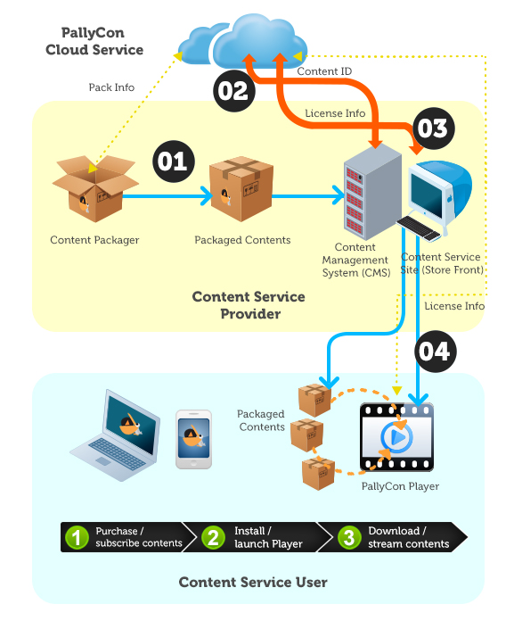
가이드 문서
아래와 같은 가이드 문서들을 참조하여 고객님의 콘텐츠 서비스와 PallyCon 서비스를 연동하실 수 있습니다.
퀵스타트 가이드는 PallyCon 서비스를 빠르게 체험할 수 있도록 테스트용 코드와 샘플, 셋업 가이드를 제공합니다.
연동 가이드는 PallyCon 서비스를 고객님의 콘텐츠 서비스에 연동하는 절차와 방법에 대해 설명합니다.
고객님의 콘텐츠 관리 시스템(CMS)와 연동하기 위해서는 패키저를 연동해야 합니다. 그리고 암호화된 콘텐츠를 재생할 때, 해당 사용자의 권한 확인과 라이선스 발급 처리가 필요합니다.
또한 PallyCon 서비스에서 제공하는 관리사이트와 별도로, 자체적인 어드민 사이트를 구축하기 원하는 고객을 위해 REST API를 통해 서비스 관련 정보를 제공합니다.
다운로드
빠른 시작을 위해서는 아래 ‘퀵 스타트 샘플'을 다운로드 받고 퀵스타트 가이드를 따라해 주시기 바랍니다. 콘텐츠 파일 패키징을 위한 패키져도 아래 링크에서 다운로드 가능합니다.
퀵스타트 가이드
개요
퀵스타트 가이드는 PallyCon Service에서 제공하는 샘플 사용법에 대한 가이드입니다. 간단한 웹 페이지에서 PallyCon Player (Mobile, Web)를 호출하여 스트리밍 재생을 하거나 다운로드 후 로컬 재생하는 것을 확인 하실 수 있습니다.
샘플은 아래의 링크에서 다운로드 받으실 수 있습니다.
이 샘플을 적용하면서 PallyCon Service를 적용하는데 어떤 작업이 필요하고, 어떤 형태로 서비스가 되는지에 대하여 이해하실 수 있습니다.
필요조건
샘플을 구축하여 간단하게 구동하고, 서비스 조회까지 해보기 위해서는 가입 후 서비스 사이트 신청까지 되어야합니다. 서비스 사0이트가 성공적으로 신청되면, 서비스 사이트에 해당하는 Site ID와 Site Key, Packager Key를 확인할 수 있습니다.
샘플 페이지들은 .jsp로 구성되어 있습니다. 이 페이지를 수정하고, 사용하기 위해서는 Java와 Tomcat이 필요합니다. Java 6 (1.6)와 Java 7 (1.7) 응용 프로그램 및 서버 환경에서 Java를 배포 지원하는 Java 런타임 환경 (JRE)를 설치해야 합니다.
Java와 Tomcat를 다운받기 위해선 아래 링크를 통해 다운로드가 가능합니다.
- Java: http://www.oracle.com/technetwork/java/javase/downloads/index.html
- Tomcat: http://tomcat.apache.org
설치 파일 열기
PallyCon_Sample.zip 구성은 다음과 같습니다.
| Folders or Files | Description |
|---|---|
| sample.war | 샘플 소스가 있는 파일 |
| CloudApplicationPackager.zip | Cloud Application Packager 파일 |
Sample.war 구성
| Folders or Files | Description |
|---|---|
| /src/aes/ | aes256, base64encode 소스 샘플 파일이 있는 폴더 |
| /images | content_list.jsp 페이지에서 사용하는 image 관련 파일 포함 |
| /js | content_list.jsp 페이지에서 사용하는 jquery 관련 파일 포함 |
| /WEB-INF/classes/aes/ | aes256 class sample, base64encode class sample |
| /WEB-INF/lib | sample에 필요한 jar 파일 |
| /ServiceSite/aes_ok.jsp | 파라미터를 aes256 암호화 하는 페이지 파일 |
| /ServiceSite/service_manager.jsp | Mobile Service Site 페이지 파일 |
| /ServiceSite/service_manager_pc.jsp | PC Service Site 페이지 파일( Bookmark, LMS 정보 처리 포함 ) |
| /ServiceSite/config.jsp | 샘플을 실행시키기 위한 config 파일 |
| /ServiceSite/content_list.jsp | Mobile Web sample 페이지 파일 |
| /ServiceSite/content_list_pc.jsp | PC Web sample 페이지 파일 |
| /CIDIssue_RightsInfo/CIDIssue.jsp | CID 발급 페이지 파일 |
| /CIDIssue_RightsInfo/ContentUsageRightsInfo.jsp | 콘텐츠 사용 권한 정보 페이지(Content Usage Rights Info gateway) 파일 |
CloudApplicationPackager.zip 구성
| Folders or Files | Description |
|---|---|
| Bin/PallyCon_packager.exe | 프로그램 실행 파일 |
| Bin/Setting.ini,images | 프로그램을 실행하는데 필요한 파일 |
| Release_Note.txt | 이번 버전에서 변경된 사항 기술 |
설치 및 콘텐츠 준비
PallyCon Service에서 제공하는 샘플파일을 이용하여 간단하게 서비스를 구축하기 위한, 과정에 대하여 설명합니다.
파일 설치하고, 내용 수정하기
Step1: Web 페이지 복사
sample 파일 압축 해제 후 war 파일을 tomcat manager를 통해 웹서버에 올립니다.
Step2: config.jsp 파일 수정
config.jsp 파일의 수정은 PC / Mobile에 공통으로 영향을 주는 값들에 대한 수정입니다.
aes256 configration (aes key config)
key를 PallyCon CP Admin에서 확인이 가능한 Site Key 로 변경하여 세팅합니다. AES256 암호화 및 복호화에 Site Key와 함께 사용되는 Initial Vector는 고정값으로 사용됩니다. (Initial Vector: 1234567890abcdef)
Content Usage Info Page (gateway config)
DRM이 적용된 컨텐츠를 사용하기 위한 라이선스 정보를 설정합니다. LIMIT, PD_START, PD_END, PD_COUNT 값을 아래와 같이 설정하여 라이선스 정보을 결정합니다. PallyCon Player(Mobile, PC)는 횟수제가 설정된 라이선스에 대한 재생 처리는 지원하지 않습니다.
| License Rules | LIMIT | PD_START | PD_END | COUNT |
|---|---|---|---|---|
| 횟수제 | Y | Empty | Empty | 0 보다 큰 값 |
| 기간제 | Y | PD_END보다 이전 날짜 | PD_START보다 이후 날짜 | Empty |
| 기간제+횟수제 | Y | PD_END보다 이전 날짜 | PD_START보다 이후 날짜 | 0 보다 큰 값 |
| 무제한 | N | Empty | Empty | Empty |
날짜: GMT (YYYY-MM-DDThh:mm:ss)
content_list configration (content list config)
DRM 컨텐츠 재생 및 다운로드시 필요한 정보를 세팅 합니다.
- sSite_ID: PallyCon admin 페이지에 발급되어있는 siteID
- sSite_Url: 현재 서버 IP 및 domain
- sFilename1: 첫 번째 목록의 콘텐츠 filename과 확장자 (원본/DRM)
- sFilename2: 두 번째 목록의 콘텐츠 filename과 확장자 (원본/DRM)
- sFilename3: 세 번째 목록의 콘텐츠 filename과 확장자 (원본/DRM)
기타 메타데이터는 sCategory_name, sCategory_teacher, Content_name1, Content_name2, Content_name3의 수정을 통해 설정할 수 있습니다.
언어 설정하기
sLanguage의 값으로 언어 설정을 합니다. 언어 지원은 한국어(KR), 영어(EN)가 지원됩니다.
Step3: PallyCon CP Admin에 URL 세팅
PallyCon CP Admin에 Content ID Issue Page URL으로 CIDIssue.jsp의 URL 을 설정하고, Content Usage Rights Info Page URL으로 ContentUsageRightsInfo.jsp의 URL을 설정합니다.
- CIDIssue.jsp의 URL: http://IP:8080/sample/CIDIssue_RightsInfo/CIDIssue.jsp
- ContentUsageRightsInfo.jsp의 URL: http://IP:8080/sample/CIDIssue_RightsInfo/ContentUsageRightsInfo.jsp
Packaging, DRM 콘텐츠 준비하기
Packager을 통해 원본컨텐츠를 암호화하여 .ncg 파일로 패키징 할 수 있습니다.
Step1: Packager 실행
- 첨부된 CloudApplicationPackager.zip 파일 압축을 풉니다.
- PallyCon_Packager.exe 파일을 실행시킵니다.
Step2: Packager 세팅
PallyCon CP Admin에서 확인이 가능한 Site ID 와 Packager Key를 입력합니다.

Step3: Packaging
테스트 할 MP4파일 3개를 선택 후 start packaging 버튼을 클릭하여 파일을 Packaging 합니다. (8번 버튼 클릭)

Step4. Packaging 완료된 콘텐츠 파일 세팅
Packaging이 완료되면 원본콘텐츠(MP4)는 DRM콘텐츠(NCG)로 변환됩니다.
- DRM 콘텐츠를
/$TOMCAT_HOME/webapp/sample/ServiceSite/cont에 위치 시킵니다. - 해당 콘텐츠 파일명을 config.jsp의 sFilename1,2,3 값으로 변경합니다.
구동시키기
PallyCon Mobile Player 설치하기
PallyCon Mobile Player는 앱 스토어나 구글 플레이를 통해 설치할 수 있습니다.
PallyCon PC Web Player는 URL을 호출하여 팝업으로 Player를 실행하는 구조로 되어 있습니다. URL은 PC Web sample 페이지에 링크되어 있어 별도로 설치할 필요가 없습니다.
스트리밍, 다운로드, 로컬 재생하기
PallyCon Player는 Mobile/PC Web Browser 에서 호출하여 사용하는 방법으로 구동됩니다.
스트리밍
PC/Mobile Web sample 페이지에서 Play 버튼을 터치하면 각 PallyCon Player를 호출하여 스트리밍을 시작합니다.
[Mobile] 다운로드
Mobile Web sample 페이지에서 Download 버튼을 터치하면 PallyCon Mobile Player를 호출하여 다운로드를 시작합니다.
[Mobile] 로컬 재생
다운로드된 DRM 콘텐츠는 리스트에서 확인할 수 있습니다. 리스트에서 원하는 콘텐츠를 터치하면, 로컬 재생을 시작합니다.
사용 내역 조회하기
간단히 적용하여 테스트 하면서 발급받은 Licnese와 Packaging된 콘텐츠에 대한 정보를 PallyCon CP Admin 페이지에서 조회할 수 있습니다.
Revision History
이 테이블은 Quick 가이드의 수정사항에 대해 설명한 것입니다.
| Date | Detail |
|---|---|
| 2014.08.28 | Quick Guide 제작 |
| 2014.12.09 | PallyCon PC Player 내용 추가 |
연동 가이드
연동 개요
PallyCon Service Building
PallyCon Service는 업체가 가지고 있는 콘텐츠를 보안처리가 된(DRM) 콘텐츠나 원본 콘텐츠(non-DRM)를 서비스하기 위해 제공되는 서비스입니다. 그 중 PallyCon Service 구축을 위해 필요한 정보를 제공합니다.

PallyCon Service의 DRM 솔루션은 모든 파일에 적용할 수 있습니다. 하지만, PallyCon Service는 동영상 콘텐츠만을 서비스합니다. 그 외 파일에 대한 DRM 적용은 PallyCon SDK를 활용하여 직접 구현하셔야 합니다.
PallyCon Service는 ‘Packaging'과 'PallyCon Cloud 서비스 사이트’, 'Player’ 로 구성되어 있습니다.
- Packaging: 원본 콘텐츠를 DRM 콘텐츠로 변환하는 서비스를 제공합니다.
- PallyCon Cloud Service Site: DRM 콘텐츠를 생성하거나 DRM 콘텐츠를 서비스하는데 필요한 정보를 가지고 오는 서비스를 제공합니다.
- Player: DRM 콘텐츠를 서비스하는 Mobile, PC Player입니다.
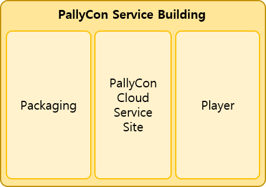
Packaging을 위해 PallyCon Service에서는 Packager를 제공합니다.

PallyCon Service는 업체의 서비스 정책에 영향을 받아 서비스 되어야 합니다. 업체의 서비스 정책의 반영은
- Packaging에서 DRM 콘텐츠의 식별자(CID, Content ID)를 부여하는 형태로 서비스 정책이 반영됩니다. CID를 부여하는 방법은 CID(Content ID) 발급 페이지를 개발하여 부여하거나, 직접 입력하여 부여하는 방법이 있습니다.
- DRM 콘텐츠를 서비스하는 Player에서 DRM 콘텐츠를 사용할 때 콘텐츠 사용 정보를 결정하는 것으로 정책이 반영됩니다. 콘텐츠 사용 정보는 재생 기간, 재생 횟수로 구성되고, 결정하는 방법은 콘텐츠 사용 권한 정보 페이지 개발을 통해 가능합니다.
- Player를 서비스 정책에 맞게 설정하는 것으로 반영됩니다. 정책을 Player에 설정하는 방법은 Service Site 페이지와 Player를 서로 연동시키는 것으로 가능합니다.
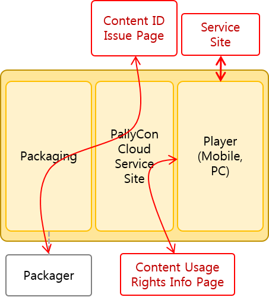
PallyCon Service Scenario
업체가 DRM 콘텐츠를 서비스할 때의 콘텐츠 흐름을 통해 PallyCon Service 시나리오에 대하여 설명합니다.
Packaging
DRM 서비스를 위해 가장 먼저 하는 일은 원본 콘텐츠를 Packaging 하는 것입니다. Packaging은 Packager에 의해 이루어지며, Packager는 Content ID(CID)를 발급받아, CEK를 생성한 뒤 원본을 DRM 콘텐츠로 변환합니다. 변환이 완료되면 Content ID(CID)와 CEK를 PallyCon Cloud 서비스 사이트로 전달하는 것으로 Packaging을 완료합니다.
변환된 DRM 콘텐츠를 다운로드 서버에 업로드 하여 서비스를 준비합니다.
Player를 통한 DRM 서비스
다운로드 서버에 있는 DRM 콘텐츠를 Player에서 사용을 할 때, License가 필요합니다. License는 PallyCon Cloud 서비스 사이트에서 생성하여 Player로 발급하며, License를 생성할 때 PallyCon Cloud 서비스 사이트에 저장되어 있는 CID, CEK와 콘텐츠 사용 정보 페이지에서 콘텐츠 사용 정보를 사용합니다.
License를 발급 받은 Player는 DRM 콘텐츠를 원본 콘텐츠로 변환하여 사용합니다.
PallyCon Service Building Scenario
PallyCon Service는 아래의 순서대로 진행하면서 구축합니다.
STEP1: Packager를 선택하여 Packaging 준비를 합니다.
STEP2: CID(Content ID) 발급 페이지(Content ID Issue Page)를 개발하고, URL을 CP Admin에 등록합니다.
STEP3: 원본 콘텐츠를 Packaging합니다.
STEP4: Packaging된 DRM 콘텐츠를 다운로드 서버에 업로드 합니다.
STEP5: 콘텐츠 사용 권한 정보 페이지(Content Usage Rights Info Page)를 개발하고, URL을 CP Admin에 등록합니다.
STEP6: Client가 연동할 Service Site를 개발합니다.
STEP7: 서비스를 시작합니다.
PallyCon Service에서는 구축에 필요한 가이드 문서를 제공합니다.
Packaging Guide
STEP1 ~ STEP4에 대한 가이드 문서입니다. 이 가이드 문서에서는 Packaging 하는 방법과 CID 발급 페이지 개발에 필요한 정보, 주의사항에 대하여 설명합니다.
License Issue Guide
STEP5에 대한 가이드 문서입니다. 이 가이드 문서에서는 DRM 콘텐츠를 사용하기 위해 필요한 License와 License 생성, 발급, 콘텐츠 사용 권한 정보 페이지 개발에 필요한 정보 및 주의사항에 대하여 설명합니다.
Web Working Guide, Mobile Working Guide
STEP6에 대한 가이드 문서입니다. 이 가이드 문서는 PallyCon Service에서 제공하는 Web Player와 Mobile Player를 사용하기 위해 필요한 연동 작업들에 대하여 설명합니다.

Revision History
이 테이블은 Overview 가이드의 수정사항에 대해 설명한 것입니다.
| Date | Detail |
|---|---|
| 2014.08.27 | Overview Guide 제작 |
패키징 가이드
Introduction
이 문서는 업체에서 DRM 서비스를 시작하기 위한 최초 작업인 CMS(Contents Manager System)에 DRM 콘텐츠를 추가하기 위한 가이드 문서입니다.
DRM Packaging
DRM 서비스를 위해서는, 기존 업체가 가지고 있는 콘텐츠 관리 시스템(Contents Manager System, CMS)에 DRM을 추가해야 합니다. DRM 콘텐츠는 원본 콘텐츠를 DRM이 적용된 콘텐츠로 변환(Packaging)하여 얻을 수 있습니다.
원본 콘텐츠를 DRM이 적용된 콘텐츠로 변환하기 위해서는 Packager가 필요하며, PallyCon Cloud 서비스 사이트에서는 Packaging을 위하여 Cloud Application Packager와 Cloud CLI Packager를 제공하고 있습니다.
- Cloud Application Packager : UI를 갖추고 있는 Application 형태의 Packager입니다. 이 프로그램은 Application 형태로 제공되며, 윈도우에서만 사용이 가능합니다.
- Cloud CLI Packager : 업체에서 가지고 있는 CMS 솔루션에 연동이 가능하도록 하기 위한 Cloud CLI(Commend Line Interface) Packager 이며, 윈도우와 리눅스 환경에서 사용이 가능합니다.
이 문서의 활용
이 문서에서는 원본 파일을 DRM 적용을 위한 Packaging/DRM Service 시나리오와 Packager 사용 방법에 대한 설명을 제공합니다.
이 설명을 통해
- Packaging에서의 주의사항에 대해 알수 있습니다.
- DRM 콘텐츠를 관리하는데 도움을 줄 수 있는 정보를 얻을 수 있습니다.
- Player에서의 서비스 시나리오 뿐만 아니라, 업체의 전체 DRM 서비스 시나리오를 이해하는데 도움을 줄 수 있습니다.
필요조건
작업을 진행하기 전에 먼저 개발자가 갖추어야할 것들은 다음과 같습니다.
- PallyCon 서비스 사이트로부터 site ID, packager key, site key가 발급된 상태이어야 합니다.
- Quick Start를 통해 PallyCon 서비스의 전체적인 흐름을 이해하고 있어야 합니다.
- 개발에 필요한 HTTP(s) 통신과 AES암호화 등에 대한 지식 및 적용 기술을 가지고 있어야 합니다.
적용 순서
STEP1: Packager에 대해 알기 위해 이 문서를 최소 한번 이상 정독합니다.
STEP2: 콘텐츠 식별자 (Content ID, CID) 생성 정책에 대해 결정합니다.
STEP3: CID를 직접 입력하는 방법과 CID 발급 페이지와 연동하여 발급받는 방법 중 CID 발급 방법을 선택합니다.
[CASE1: CID를 직접 입력하는 방법을 선택 - Cloud CLI Packager에서만 가능합니다.]
STEP4: CMS 솔루션에 CID(28byte)가 입력되도록 Cloud CLI Packager를 연동 개발을 합니다.
[CASE2: CID 발급 페이지와 연동하여 발급받는 방법을 선택 - Cloud CLI Packager, Cloud Application Packager 모두 가능합니다.]
STEP4: 이 문서에서 제공하는 CID 발급 연동 규격에 따라 CID 발급 페이지를 개발합니다.
STEP5: CID 발급 페이지 주소를 CP Admin의 Content ID Issue URL으로 등록합니다.
STEP6-Cloud CLI Packager : CMS 솔루션에 CID를 입력되지 않도록 Cloud CLI Packager를 연동 개발을 합니다.
STEP6-Cloud Application Packager
STEP6-1: Cloud Application Packager를 실행합니다.
STEP6-2: 환경 설정 창에서 site ID와 packager key를 입력합니다.
STEP6-3: Packaging할 파일 경로를 입력한 후 Packaging을 시작합니다.
STEP6-4: Packaging된 DRM 콘텐츠를 다운로드 서버에 업로드합니다.
Scenario
원본 콘텐츠가 Packaging되는 시나리오와 Packaging된 DRM 콘텐츠가 어떻게 서비스되는지 설명합니다.
이 설명을 통해 Content ID의 중요성을 알고, Content ID(CID)와 CEK가 어떻게 생성되고 어디에 사용되는지를 이해하셔야 합니다.
Packaging Scenario
Content ID를 직접 입력하는지, Contnet ID 발급 페이지에서 발급받는지에 따라 Packaging 되는 시나리오를 설명합니다. Packaging에 사용되는 두 가지의 Packager는 공통적으로 Site ID, Packager Key, Source Path, Destination Path를 입력받습니다. 그외에 Cloud CLI Packager의 경우, CID를 직접 입력이 가능합니다.
- Site ID, Packager Key: 사용하는 Packager를 PallyCon Cloud 서비스 사이트에서 인증할 때 사용하는 값입니다.
- Source Path: 원본 콘텐츠가 있는 경로입니다.
- Destination Path: Packaging된 DRM 콘텐츠가 생성될 경로입니다.
업체가 직접 입력하거나, Content ID 발급 페이지에서 발급되는 CID는 28 byte입니다. 이 Content ID는 PallyCon 서비스 사이트에서 업체에서 입력한 Site ID와 합쳐지게 되어, Packaging되는데 사용되는 Content ID는 32 byte가 됩니다.
Content ID 변환
- 사용자 입력: Content ID (28 byte)
- PallyCon Cloud 서비스 사이트: Content ID (28 byte) + Site ID (4 byte) = Content ID (32 byte)
- Packaging에 사용되는 Content ID: Content ID (32 byte)
CID (Contents ID)를 직접 입력
Cloud CLI Packager만 CID 인터페이스가 있어 입력여부를 결정할 수 있습니다.
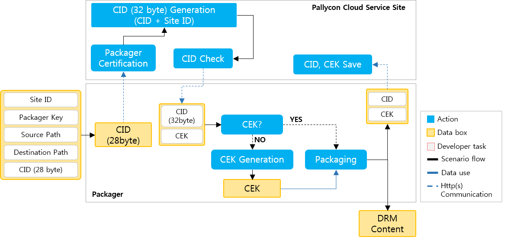
Cloud CLI Packager에 CID가 입력되었다면, Packager는 PallyCon Cloud 서비스 사이트에 CID가 있는지 확인합니다.
PallyCon Cloud 서비스 사이트는 Packager와 Site ID를 인증합니다. 인증에 성공하면, 입력받은 28byte의 Content ID를 Site ID와 결합하여 32 byte의 Content ID를 생성합니다. 32 byte의 CID가 PallyCon Cloud 서비스 사이트에 동일한 CID가 있는지 검색합니다. 동일한 CID가 있다면, PallyCon Cloud 서비스 사이트에서 CID에 해당하는 CEK를 검색하여 Packager로 CID와 함께 전달합니다. 없다면, CID만 전달합니다.
Packager에서 PallyCon Cloud 서비스 사이트에서 전달한 데이터에서 CEK가 없으면, CEK를 생성합니다. 그 다음, CEK와 CID를 이용하여 Source Path에 있는 원본 콘텐츠를 DRM 콘텐츠로 변환을 시작합니다.
변환이 완료되면, Destination Path에 DRM 콘텐츠가 생성되고, Packager에서 CID와 CEK를 PallyCon Cloud 서비스 사이트로 전달합니다.
CID 발급 페이지를 통해 CID 발급
*Cloud CLI Packager에서 CID 인터페이스에 CID를 입력하지 않거나, Cloud Application Packager를 사용하는 경우에는 반드시 CID 발급 페이지에서 CID를 발급받아야 합니다. *
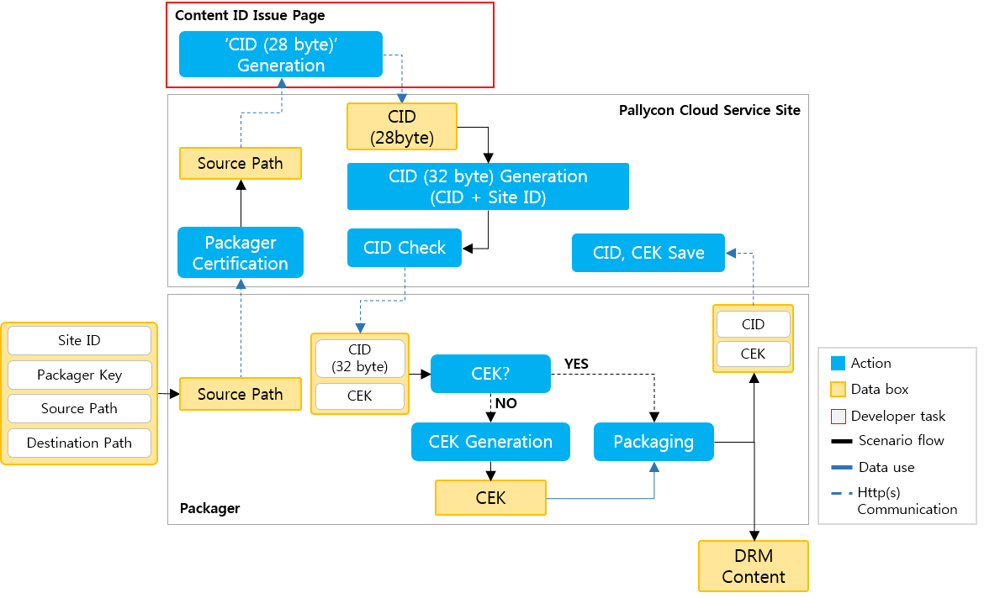
Packager는 PallyCon Cloud 서비스 사이트에 CID 발급 요청을 하고, PallyCon Cloud 서비스 사이트는 Content ID Issue Page URL의 CID 발급 페이지에 CID 발급 요청을 합니다. CID 발급 페이지에서 CID(28byte)를 생성하여 PallyCon Cloud 서비스 사이트에 전달합니다.
그 다음 과정은 CID를 직접 입력하는 과정과 동일합니다.
DRM Content & Service Scenario
DRM Content
모든 콘텐츠를 DRM 콘텐츠로 Packaging 할 수 있습니다.
일반적으로 원본 파일을 직접 Packaging하지만, HLS 콘텐츠의 경우에는 HLS Key를 Packaging합니다.
HLS 콘텐츠를 Packaging 하기 위해서는 첫번째 단계로 일반적인 HLS 파일로 변환하는 과정을 거칩니다. 이 때 사용되는 Tool은 반드시 Segment Tool의 'Simple Encryption’ 옵션을 제공하는 것으로 사용해야 합니다. 이 옵션을 사용하여 TS파일을 생성하면, TS 파일과 M3U8 파일외에 암호화된 TS 파일을 복호화하기 위한 HLS Key가 생성됩니다. 이 HLS Key를 Packager를 사용해 Packaging합니다.
아래 그림은 HLS 서비스를 위한 DRM 콘텐츠 준비에 대한 그림입니다.
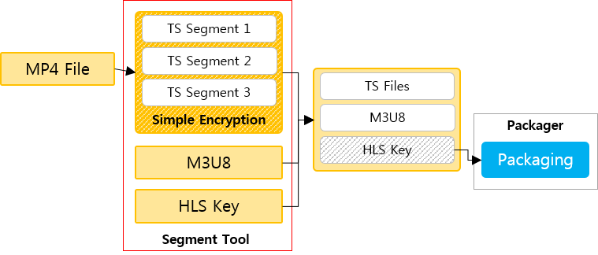
Service Scenario
DRM 콘텐츠를 서비스 하기 위해서는 License가 필요합니다. License는 DRM 콘텐츠의 Content ID와 CEK, 그리고 콘텐츠 사용기간과 사용횟수에 대한 License Rule 정보를 가지고 있습니다.
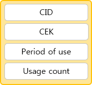
License는 PallyCon Cloud 서비스 사이트에서 발급됩니다. License를 발급받기 위해서는 사용자 정보, 기기 정보, 콘텐츠 정보가 필요합니다. 이 정보들 중에 콘텐츠 정보는 DRM 콘텐츠에서 추출된, Site ID를 포함하고 있는 32byte의 CID(Content ID)를 포함하고 있습니다.
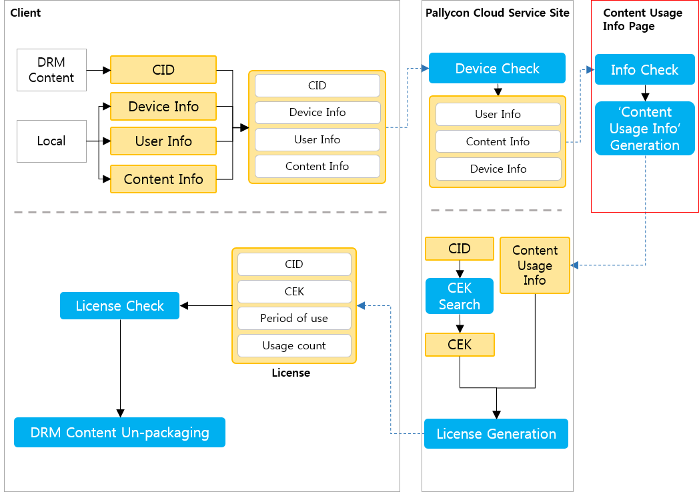
DRM 콘텐츠를 사용자가 사용하려고 할 때, Player에서는 DRM 콘텐츠에서 Content ID를 추출합니다. 그리고 사용하는 기기와 사용자 정보, 기타 콘텐츠 정보를 추출하여, CID와 함께 PallyCon Cloud 서비스 사이트로 License를 요청하기 위한 데이터를 전달합니다.
PallyCon Cloud 서비스 사이트에서는 이 정보 중 사용자 정보와 기기 정보를 이용하여 License를 발급가능한지 판단합니다. 발급이 가능하다면, CID를 포함한 콘텐츠 정보와 사용자 정보를 콘텐츠 사용 권한 정보 페이지에 콘텐츠 사용 정보(사용기간, 횟수)를 위한 요청데이터를 전달합니다.
콘텐츠 사용 권한 정보 페이지에서는 요청데이터에 맞는 콘텐츠 사용 권한 정보를 PallyCon Cloud 서비스 사이트로 전달합니다. PallyCon Cloud 서비스 사이트에서는 CID에 맞는 CEK를 추출합니다. CEK는 콘텐츠 사용 정보와 함께 License를 생성하여 Player로 전달합니다.
클라이언트는 발급받은 License를 이용해 DRM 콘텐츠가 사용가능한지 판단하고, 사용이 가능하다면 CEK를 이용하여 DRM 콘텐츠를 원본 콘텐츠로 변환(Un-packaging)합니다.
Content ID 정책
Content ID는 License와 1대1로 관리됩니다. 그렇기 때문에, 콘텐츠를 Packaging할 때 CID를 어떻게 설정하느냐에 따라 여러 개의 콘텐츠를 한 개의 License로 관리할 수도 있고, 각각 하나의 License로 관리할 수도 있습니다.
만약, 하나의 묶음으로 여러 개의 콘텐츠를 서비스 한다면, 콘텐츠 한 개당 한 개의 Licnese로 관리하는 것보다 하나의 묶음를 한 개의 License로 관리하는 것이 효과적일 것입니다. 여러 개의 콘텐츠를 한 개의 License로 관리하기 위해서는 콘텐츠를 Packaging 할 때 같은 묶음의 콘텐츠는 같은 CID를 사용하십시오.
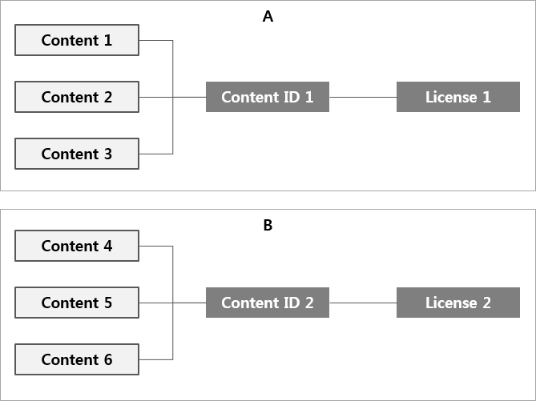
만약, 하나의 콘텐츠로 서비스를 한다면, 콘텐츠 한 개당 한 개의 License로 관리해야만 합니다. 콘텐츠를 Packaging 할 때 콘텐츠마다 서로 다른 CID를 사용하십시오.

Content ID 발급 페이지
Content ID (CID)를 직접 입력하지 않고, CID 발급 페이지와 통신하여 CID를 전달받을 때 페이지 개발에 대한 Protocol과 규격에 대한 설명입니다.
Http(s) Protocol (POST Method, REQUEST/RESPONSE Data)
개발자는 CID 발급 페이지 개발을 통해 Cloud CLI Packager나 Cloud Application Packager에서 요청하는 28 byte의 Content ID를 생성하여야 합니다.
REQUEST DATA
Details
CID 발급 페이지에서 파싱해야 할 데이터 입니다.
http(s)://ContentIDIssuePageURL&data=Base64Encoding(AES256Encyption(XML DATA))String
Format
- UTF-8 String Encoding 사용
- POST Method
- URL: http(s)://Content ID Issue Page URL
- Body
Parameter : data Value II: XML DATA
XML DATA
- Packaging을 하려는 콘텐츠에 대한 정보가 들어있는 데이터 입니다. 이 데이터는 AES256 으로 암호화되며, 다시 Base64로 인코딩하여 전달됩니다.
XML Standards
Request data는 PallyCon Cloud 서비스에서 전달하는 값으로 빈값없이 CID 발급 페이지로 전달됩니다.
<?xml version='1.0' encoding='UTF-8'?>
<RES>
<FILEPATH>C:\DATA\package_content_ori.mp4</FILEPATH>
<FILENAME>package_content_ori.mp4</FILENAME>
<NONCE>fdfe321xb74azv</NONCE>
</RES>
FILEPATH : Packager에서 전달한 파일의 전체 경로입니다.
FILENAME : Packager에서 올라온 FilePath의 파일명입니다.
NONCE : PallyCon Cloud 서비스에서 CID 발급 페이지와 통신하는 데이터를 인증하기 위한 값입니다.
RESPONSE DATA
Details
CID 발급 페이지에서 만들어야 할 데이터 입니다.
Base64Encoding(AES256Encyption(XML DATA)) String
Format
- Base64Encoding(AES256Encyption(XML DATA)) String
- UTF-8 String Encoding 사용
XML DATA
- PallyCon Cloud 서비스에서의 요청에 대한 응답
XML Standards
(CID 발급 성공)
<?xml version='1.0' encoding='UTF-8'?>
<RES>
<ERROR>0000</ERROR>
<CID>idd_32_geedesef123fde34512dfe</CID>
<NONCE>fdfe321xb74azv</NONCE>
</RES>
(CID 발급 실패)
<?xml version='1.0' encoding='UTF-8'?>
<RES>
<ERROR>0001</ERROR>
<ERRMSG>No Registerd File</ERRMSG>
<NONCE>fdfe321xb74azv</NONCE>
</RES>
ERROR
: 정의된 Error code로, 필수로 사용해야 하는 parameter입니다. 고정된 4byte의 길이를 가져야 하며, 빈 값은 허용하지 않습니다. 성공일 때는 0000으로 표시하고, 그외에는 실패입니다.
ERRORMSG
: ERROR값이 실패이었을 때, 그와 관련된 메시지입니다. 이 parameter는 필수로 사용할 필요가 없으며, 빈값이 허용됩니다. 최대 255byte까지 허용됩니다.
CID : CID 발급 페이지에서 CID 정책에 의해 생성된 CID로, 성공시 필수로 사용해야 하는 parameter입니다. 빈값은 허용하지 않으며, 최대 28byte까지 허용합니다. CID는 영문, 숫자, 일부 특수 문자 (’ _ ’, ’ . ’)만 허용합니다.
NONCE : PallyCon Cloud 서비스에서 CID 발급 페이지와 통신하는 데이터를 인증하기 위한 값으로, 필수로 사용해야 하는 parameter입니다. 빈값은 허용하지 않으며, 반드시 Request Data에서의 'NONCE’ 값과 동일한 값을 보내주셔야 합니다.
AES256 Encryption/Decryption
Cloud Packager와 DRM 서버 사이에 통신하는 데이터(REQUEST / RESPONSE DATA)는 AES256 암호화를 통해 보호받습니다.
Details
Algorithm
- Algorithm : AES
- Keysize : 256 bit
- Mode : CBC
Key, Initial vector
- Key: 32 byte (PallyCon CP Admin 페이지에서 확인 가능)
- Initial vector: 16 byte (고정값: 1234567890abcdef)
Padding
- PKCS7을 사용합니다.
How To Use Cloud Application Packager
설치
Cloud Application packager는 설치 과정없이 .zip 파일을 압축을 푼 후 바로 사용이 가능합니다.
Bin 폴더
- PallyCon_Packager.exe: 프로그램 실행 파일
- Setting.ini, Image: 프로그램을 실행하는데 필요한 파일
- readme.txt : 프로그램 매뉴얼 파일
Doc 폴더
- NCG_Packager_Manual_Eng.doc: 프로그램 매뉴얼 파일
Release_Note.txt
- 이번 버전에서 변경된 사항 기술
사용법
STEP1: Bin 폴더의 NCG_Packager_Cloud.exe를 더블클릭하여 실행합니다.
STEP2: Settings 화면에서 Site ID와 Packager Key를 입력입력합니다. (PallyCon CP Admin에서 확인이 가능합니다.)
STEP3: Settings 화면에서 Packager 설정합니다. 최초 실행히 default 값으로 설정되어 있습니다.
STEP4: Main 화면에서 Destination 경로를 설정합니다.
STEP5: Main 화면에서 Source 경로 (폴더)를 설정하여 Packaging할 파일 목록을 불러옵니다.
STEP6: Main 화면에서 'Packaging’ 버튼을 클릭하여 Packaging을 시작합니다.
화면설명
Main 화면
(1) Input : Packaging 이 필요한 원본 영상 파일들이 존재하는 폴더입니다.
(2) Ouput : Packaging 작업 후에 Packed 된 파일을 저장하는 폴더입니다.
(3) Input Folder : 버튼을 눌러 탐색기를 통해 folder 를 지정 할 수 있습니다.
(4) Output Folder
: 이 버튼은 Settings 의 Pack type 이 Batch 일 경우만 사용 가능합니다.
: 버튼을 눌러 탐색기를 통해 folder 를 지정 할 수 있습니다.
: 지정한 폴더를 변경하면 File List 는 초기화 됩니다.
(5) Add Input Folder : 이 버튼은 Settings 의 Pack Type 이 Unit 일 경우만 사용 가능 합니다. : 폴더를 지정하지 않고 하고 계속해서 원하는 폴더를 추가 시킬 수 있습니다..
(6) Add Input False : 이 버튼은 Settings 의 Pack type 이 Batch 일 경우만 사용 가능 합니다. : 낱개 파일을 계속적으로 추가 시킬 수 있습니다.
(7) Settings : Settings 화면을 불러옵니다.
(8) Packaging : 파일 리스트들을 Packaging 합니다..
(9) File List : File Name Column, Result Column 두 개의 Column으로 구성되어 있습니다.
File Name Column
패키징 할 리스트들 목록입니다. 이 목록은 Input folder로 지정할 수 있습니다. Add Input Folder로 추가 할 수 있습니다. 목록에 있는 파일 중 Packaging 하고 싶지 않은 파일은 클릭 한 후에 Delete 키를 눌러서 삭제 할 수 있습니다. 목록에 있는 파일 다중 삭제 또한 가능합니다.Result Column
Ready: 패키징 하기 전에 표시됩니다. Success: 패키징 성공했을 때 표시됩니다. Fail: 패키징 실패했을 때 표시됩니다.
(10) Log List : Log Type Column, Contents Column 두 개의 Column으로 구성되어 있습니다.
Log Type Column
Error: 패키징 중에 예기치 않은 오류를 만났을 때 표시됩니다.
Work: 패키징 중에 정상 작업 상황을 기록합니다.
Settings: 환경 설정에 관한 사항을 기록합니다.Contents Column Work: ’[작업 파일 이름] + 작업 결과'로 표시됩니다.
Error: ’[작업 파일 이름] + 작업 실패 위치 + Code Number'로 표시됩니다. 실제 Error 가 발생 했을 때 이 로그들은 파일로 자동 저장 되며 분석을 위해 help desk로 Log File을 보내주어야 합니다.
Settings: Packaging 시점에 Settings 설정을 나타낸다.
Result: Total, Success, Fail 개수가 File List 화면의 Result Column과 일치한다. Packaging한 결과를 요약한다.
Settings 화면
Settings 화면은 상단에 'Common’ 섹션과 'Packaging'섹션으로 구분됩니다.

(1) Packaging Type
Batch Pack: 일괄 작업으로서 input folder 버튼으로 한 개의 폴더만 지정 가능합니다. 그러나 하위 폴더 구조 그대로 유지하여 output 폴더를 생성합니다. 다른 폴더를 지정 할 경우 File List 에 있던 목록이 사라집니다.
Unit Pack: 개별 작업으로서 add input folder 를 통해 계속적으로 packaging 하고자 하는 폴더를 추가 할 수 있습니다. 그러나 output 폴더에 하위구조를 그대로 유지 할 수는 없습니다. Add input file 버튼으로 개별 파일 도 계속 해서 추가 할 수 있습니다.
(1) Supported Extensions : 지원 가능한 확장자 리스트입니다. 메인 화면의 Input folder를 통해 파일을 추가 할 때 지원하지 않는 확장자의 파일은 추가 하지 않습니다. 추가하고자 하는 확장자가 따로 있다면 Add, Remove 버튼을 통해 추가, 삭제 할 수 있습니다.
(2) Integration Info
- Site ID: PallyCon CP Admin에서 발급받은 Site ID입니다.
- Packager Key: PallyCon CP Admin에서 발급받은 Packager Key입니다.
Progress Bar 화면

(1) File Name : 실시간 진행되고 있는 파일의 이름을 나타냅니다.
(2) Timer : 전체 경과 시간을 나타낸다. Pause 한 시간은 추가되지 않습니다.
(3) Percentage : 한 개의 파일의 Packaging 진행률을 나타냅니다.
(4) Total Number : 전체 Packaging 하려는 개수 와 작업이 완료된 개수를 나타냅니다.
(5) Pause & Cancel : 작업 도중 일시 정지 할 수 있으며 이때 작업시간은 추가되지 않습니다. Continue 버튼으로 작업 재개 할 수 있습니다. 또한 Cancel 버튼으로 작업 취소를 할 수 있으며 작업 취소는 파일단위로 취소 되기 때문에 현재 작업 중인 파일이 끝나고 나서 작업이 중단됩니다.
로그 분석
Log File 위치 : 실행 폴더/LogList_mmddhhmm.txt 파일로 자동 생성 되며 'mm = month , dd = day , hh = hours , mm = minutes’ 를 뜻합니다.
How To Use Cloud CLI Packager
Cloud CLI Packager 확인
- PallyCon 서비스 사이트를 통해 Cloud CLI Packager 파일을 받습니다.
- 압축을 해제하면 Linux_CentOS, Linux_Ubuntu, Windows폴더를 확인할 수 있습니다.
- 각 폴더에는 bin, doc 폴더와 ReleaseNote.txt 파일이 있습니다.
- Windows: bin 폴더 내에 있는 pallyconpack.exe 파일이 커맨드 라인 패키져입니다.
- Linux 반드시 권한상승이 필요합니다.
- 권한상승 방법: chmod 775 “filename”
Input / Output Standards
Input
Format
pallyconpack pack Site_ID Packager_Key "SourceFilePath" "DestinationFilePath" (Content_ID)
// cid 입력
pallyconpack pack F001 FVJDp2LT2Xr0f4Di18z6lzv3DKvNOP20 "d:\content\OT.mp4" "d:\NCGcontent\OT.mp4.ncg"
// cid 입력하지 않을 때
pallyconpack pack F001 FVJDp2LT2Xr0f4Di18z6lzv3DKvNOP20 "d:\content\OT.mp4" "d:\NCGcontent\OT.mp4.ncg" 1234
pack : 콘텐츠를 Packaging을 한다는 값으로, 고정 4byte 값입니다. 소문자로 사용하세요.
Site_ID, Packager_Key : PallyCon Cloud 서비스 사이트에서 부여 받은 값입니다.
SourceFilePath, DestinationFilePath : 원본 파일의 전체 경로와 DRM 파일이 생성되는 전체 경로(절대경로)입니다. 공백이 있을 경우에는 반드시 “"로 묶어서 사용해야합니다.
Content_ID : Content ID입니다. 직접입력할 경우에 맨 마지막에 넣어주셔야 합니다. 28byte이하의 영문과 숫자, 일부 특수문자 ( ’ . ’ , ’ _ ’ )만 가능합니다.
Output
(성공)
<?xml version=\"1.0\" encoding=\"UTF-8\"?>
<ncgpackager>
<RESULT>0</RESULT>
<SRCFILE>d:\content\20140814\OT.mp4</SRCFILE>
<DSTFILE>d:\NCGcontent\20140814\OT.mp4.ncg</DSTFILE>
<ELAPSETIME>1.95000</ELAPSETIME>
<CID>1234</CID>
</ncgpackager>
(실패)
<?xml version=\"1.0\" encoding=\"UTF-8\"?>
<ncgpackager>
<RESULT>1202</RESULT>
<ERRORMSG>Source File is not found</ERRORMSG>
<SRCFILE>d:\content\2014-08-14\OT.mp4</SRCFILE>
<DSTFILE>d:\NCGcontent\2014-08-14\OT.mp4.ncg</DSTFILE>
</ncgpackager>
RESULT : Packaging 결과 code 값, 성공 – 0 / 실패 – Error Code
ERRORMSG : RESULT에 해당하는 메시지
SRCFILE : App Error, 원본 파일이 설정된 경로
DSTFILE : App Error, DestFile의 경로
ELAPSETIME : 성공시 Packaging에 경과된 시간
CID : 성공시 컨텐츠 헤더에 입력된 32 byte의 Content ID
Error Code
| Error Code | Error Location | Explanation |
|---|---|---|
| 0 | SUCCESS | 성공 |
| 1101 | PARAM | 실행 명령어 뒤에 Param이 하나도 전달되지 않음 |
| 1102 | PARAM | 실행 명령어 다음에 pack이라는 Param이 아님 |
| 1103 | PARAM | 실행 명령어 다음의 Param의 개수가 맞지 않음 |
| 1202 | FILE | 원본 파일이 지정된 경로에 위치하지 않음 |
| 1204 | FILE | 원본 파일에 Access할 수 없음 (권한 / 파일이름 문제) |
| 1205 | FILE | NCG 파일 생성에 실패함 (권한 / 파일이름 문제) |
| 1206 | FILE | 경로에 지정된 폴더 중 존재하지 않는 폴더 생성에 실패함 (권한 / 폴더이름 문제) |
| 1210 | FILE | App에서 버퍼를 할당받는데 실패함 (메모리 확보 / 재부팅) |
| 1301 | PACK | CID가 빈 값임 |
| 1302 | PACK | CEK가 빈 값임 |
| 2001 | NETWORK | Networks 통신을 하다 오류가 발생(ErrorMessage 확인) |
| 100XX | WINDOWS | 윈도우 소켓 생성에 실패함.(재시도 / 재부팅) |
| 그 외 | 알 수 없는 에러. |
Revision History
이 테이블은 PallyCon Packaging 가이드의 수정사항에 대해 설명한 것입니다.
| Date | Detail |
|---|---|
| 2014.08.24 | Packaging Guide 제작 |
| 2014.09.30 | How to use Cloud CLI Packager 가이드 규격 수정 |
라이선스 발급 가이드
Introduction
DRM 콘텐츠를 서비스 하기 위해서는 License가 필요합니다. 이 문서에서는 License 발급에 필요한 정보를 설명합니다.
License
License는 DRM 콘텐츠의 Content ID와 CEK, 그리고 콘텐츠 사용기간과 사용횟수에 대한 정보를 가지고 있으며, PallyCon Cloud 서비스 사이트에서 생성되어 Client로 발급됩니다.
그렇기 때문에, 개발자는 License 발급에 직접적인 개발을 할 필요가 없습니다. 다만, 개발자가 개발해야 하는 부분은 PallyCon Cloud 서비스 사이트에서 License를 생성에 필요한 콘텐츠 사용 권한 정보를 조회하기 위한 페이지입니다.
이 문서의 활용
이 문서에서는 License가 발급되는 과정과 License 발급에 필요한 콘텐츠 사용 권한 정보를 설정하는 방법에 대해 설명합니다.
이 설명을 통해
- License 발급 시 주의사항에 대해 알수 있습니다.
- License 정보의 다양한 설정방법에 대한 아이디어를 얻을 수 있습니다.
필요조건
작업을 진행하기 전에 먼저 개발자가 갖추어야할 것들은 다음과 같습니다.
- 서비스할 DRM 콘텐츠가 있어야 합니다.
- 개발에 필요한 HTTP(s) 통신과 AES암호화 등에 대한 지식 및 적용 기술을 가지고 있어야 합니다.
작업 순서
STEP1: License 발급에 대해 알기 위해 이 문서를 최소 한번 이상 정독합니다.
STEP2: 콘텐츠 사용 권한 정보(Content Usage Rights Info)를 설정하는 것에 대한 정책을 결정합니다.
STEP3: 이 문서에서 제공하는 콘텐츠 사용 정보 규격에 따라 Content Usage Rights Info 페이지를 개발합니다.
STEP4: 콘텐츠 사용 정보 페이지 주소를 PallyCon CP Admin의 Content Usage Rights Info URL으로 등록합니다.
Scenario
License Issue Scenario
DRM 콘텐츠를 사용자가 사용하려고 할 때, Player에서는 DRM 콘텐츠에서 Site ID가 포함된 32 byte의 Content ID를 추출합니다. 그리고 사용하는 기기와 사용자 정보, 기타 콘텐츠 정보를 추출하여, CID와 함께 PallyCon Cloud 서비스 사이트로 License를 요청하기 위한 데이터를 전달합니다.
PallyCon Cloud 서비스 사이트에서는 이 정보 중 사용자 정보와 기기 정보를 이용하여 License를 발급가능한지 판단합니다. 발급이 가능하다면, CID를 포함한 콘텐츠 정보와 사용자 정보를 Content Usage Rights Info 페이지에 콘텐츠 사용 정보(사용기간, 횟수)를 위한 요청데이터를 전달합니다.
Content Usage Info 페이지에서는 요청데이터에 맞는 콘텐츠 사용 정보를 PallyCon Cloud 서비스 사이트로 전달합니다. PallyCon Cloud 서비스 사이트에서는 CID에 맞는 CEK를 추출합니다. CEK는 콘텐츠 사용 정보와 함께 License를 생성하여 Player로 전달합니다.
Player는 발급받은 License를 이용해 DRM 콘텐츠가 사용가능한지 판단하고, 사용이 가능하다면 CEK를 이용하여 DRM 콘텐츠를 원본 콘텐츠로 변환(Un-packaging)합니다.
Content Usage Info 연동
PallyCon Cloud 서비스 사이트에서 Content Usage Rights Info 페이지로 사용자 정보, 콘텐츠 정보, 기기 정보를 전달하여 사용하고자 하는 콘텐츠의 License를 만들기 위한 콘텐츠 사용 권한 정보를 요청합니다.
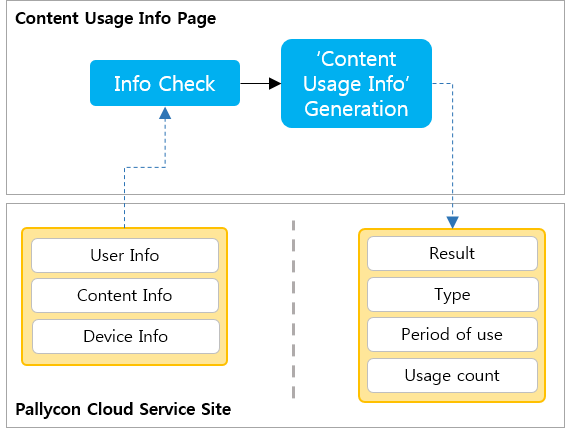
Content Usage Rights Info 페이지에서는 업체에서 결정한 콘텐츠 사용에 대한 정책에 맞게 정보를 설정하여 PallyCon Cloud 서비스 사이트로 전달합니다.
Content Usage Rights Info 페이지
Content Usage Rights Info 페이지와 통신하여 콘텐츠 사용 권한 정보(Content Usage Rights Info)를 전달받을 때 페이지 개발에 대한 Protocol과 규격에 대한 설명입니다.
Protocol (POST Method, REQUEST/RESPONSE Data)
개발자는 Content Usage Rights Info 페이지 개발을 통해 PallyCon Cloud 서비스 사이트에서 콘텐츠 사용 권한 정보를 요청하는 데이터에 알맞은 응답 데이터를 생성하여야 합니다.
REQUEST DATA
Details
http(s)://ContentUsageRightsInfoURL&data=Base64Encoding(AES256Encyption(XML DATA))String
Format
- UTF-8 String Encoding 사용
- POST Method
- URL: http(s)://Content Usage Rights Info URL
- Body
Parameter : data Value II: XML DATA
XML DATA - 콘텐츠 사용 권한 정보를 확인 하려는 콘텐츠와 사용자, 기기에 대한 정보가 들어있는 데이터 입니다. 이 데이터는 AES256 으로 암호화되며, 다시 Base64로 인코딩하여 전달됩니다.
XML Standards
Request data는 PallyCon Cloud 서비스 사이트에서 전달하는 값으로 빈값없이 Content Usage Rights Info 페이지로 전달됩니다.
<?xml version='1.0' encoding='UTF-8'?>
<RES>
<CID>C000004731001HDKLSE23KFL34KJQNC2</CID>
<USERID>1113654772</USERID>
<DEVICEID>YqiqMLuuKbIVtPp+Vl36RdLbE+cMmtADw5M=</DEVICEID>
<DEVICEMODEL>iPhone</DEVICEMODEL>
<OID>MOVIE-J-R15-2011</OID>
<NONCE>fdfe321xb74azv</NONCE>
</RES>
CID : 사용하려는 콘텐츠에서 추출한 Site ID가 포함된 32 byte의 Content ID로, Packaging시 사용된 값입니다.
USERID : 콘텐츠를 사용하려는 사용자 정보입니다.
DEVICEID : 콘텐츠를 사용하려는 기기의 ID입니다.
DEVICEMODEL : 기기의 모델명입니다.
OID : 콘텐츠의 주문정보 (Order ID)입니다.
NONCE : PallyCon Cloud 서비스 사이트에서 Content Usage Info 페이지와 통신하는 데이터를 인증하기 위한 값입니다.
RESPONSE DATA
Details
CID 발급 페이지에서 만들어야 할 데이터 입니다.
Base64Encoding(AES256Encyption(XML DATA)) String
Format
- Base64Encoding(AES256Encyption(XML DATA)) String
- UTF-8 String Encoding 사용
XML DATA
- PallyCon Cloud 서비스에서의 요청에 대한 응답
XML Standards
<?xml version="1.0" encoding="UTF-8" standalone="yes"?>
<RES>
<ERROR>0000</ERROR>
<ERRMSG>OK</ERRMSG>
<LIMIT>Y</LIMIT>
<PD_COUNT></PD_COUNT>
<PD_START>2013-12-17T13:27:01</PD_START>
<PD_END>2013-12-18T10:44:56</PD_END>
<NONCE>fdfe321xb74azv</NONCE>
</RES>
ERROR
: 정의된 Error code로, 필수로 사용해야 하는 parameter입니다. 고정된 4byte의 길이를 가져야 하며, 빈 값은 허용하지 않습니다. 성공일 때는 0000으로 표시하고, 실패일때는 업체에서 정의한 4byte의 에러코드로 정의하십시오.
ERRORMSG
: ERROR값이 실패이었을 때, 그와 관련된 메시지입니다. 이 parameter는 필수로 사용해야하며, 빈값은 Error일 경우가 아닐 때만 허용됩니다. 최대 255byte까지 허용됩니다.
LIMIT : 콘텐츠가 무제한으로 재생될 지 결정하는 parameter입니다. 'Y’, 'N'만 허용됩니다. 그외의 문자는 에러로 처리됩니다.
PD_COUNT : 횟수제 타입에서 사용해야 하는 횟수입니다. 횟수제 타입을 선택하시면 반드시 0보다 큰 값을 선택하셔야 합니다.
PD_START : 기간제 타입에서 사용해야 하는 기간 중 시작 날짜와 시간입니다. 기간제 타입을 선택하시면 반드시 이 parameter에 해당하는 값을 넣어 주셔야 합니다. 날짜와 시간은 GMT 시간으로 설현
PD_END : CID 발급 페이지에서 CID 정책에 의해 생성된 CID로, 성공시 필수로 사용해야 하는 parameter입니다. 빈값은 허용하지 않으며, 최대 32byte까지 허용합니다. CID는 영문, 숫자, 일부 특수 문자 (’ _ ’, ’ . ’)만 허용합니다.
NONCE : PallyCon Cloud 서비스에서 CID 발급 페이지와 통신하는 데이터를 인증하기 위한 값으로, 필수로 사용해야 하는 parameter입니다. 빈값은 허용하지 않으며, 반드시 Request Data에서의 'NONCE’ 값과 동일한 값을 보내주셔야 합니다.
AES256 Encryption/Decryption
Cloud Packager와 DRM 서버 사이에 통신하는 데이터(REQUEST / RESPONSE DATA)는 AES256 암호화를 통해 보호받습니다.
Details
Algorithm
- Algorithm : AES
- Keysize : 256 bit
- Mode : CBC
Key, Initial vector
- Key: 32 byte (PallyCon CP Admin 페이지에서 확인 가능)
- Initial vector: 16 byte (고정값: 1234567890abcdef)
Padding
- PKCS7을 사용합니다.
How To Set Content Usage Rights Info
License에 포함되어 있는 사용기간과 사용횟수는 콘텐츠 사용 권한 정보에 의해서 생성됩니다. 콘텐츠 사용 권한 정보는 업체의 정책에 따라 만들어 지게 됩니다. 업체가 정책을 결정하는 데 필요한 정보로, PallyCon Cloud 서비스 사이트에서는 Player에서 추출한 Content ID, User ID, Device ID, Order ID를 콘텐츠 사용 권한 정보 페이지로 전달합니다.
여기에서는 콘텐츠 사용 권한 정보를 PallyCon Cloud 서비스 사이트에서 어떻게 판단하여 사용기간과 사용횟수를 설정하는지에 대하여 설명합니다.
License Rule 정보
License Rule은 사용기간과 사용횟수에 의하여 결정됩니다. License Rule은 각각 횟수제, 기간제, 무제한, 기간제+횟수제 4가지로 결정됩니다.
- 횟수제: 횟수에 따라 재생을 관리합니다.
- 기간제: 기간에 따라 재생을 관리합니다.
- 무제한: 무제한으로 재생할 수 있도록 합니다.
- 횟수제 + 기간제: 일정 기간동안에 지정된 횟수만큼 재생되도록 관리합니다. 기간이 만료되었을 때 횟수가 남아있어도 재생은 되지 않으며, 횟수가 0이 되었을 때 기간이 남아있어도 재생되지 않습니다.
License Rule은 콘텐츠 사용 권한 정보 페이지에서 설정한 값을 판단하여 결정됩니다.
아래의 표는 콘텐츠 사용 권한 정보 설정에 따라 License Rule이 어떻게 설정되는지에 대한 표입니다.
| License Rules | LIMIT | PD_START | PD_END | COUNT |
|---|---|---|---|---|
| 횟수제 | Y | Empty | Empty | 0 보다 큰 값 |
| 기간제 | Y | PD_END보다 이전 날짜 | PD_START보다 이후 날짜 | Empty |
| 기간제+횟수제 | Y | PD_END보다 이전 날짜 | PD_START보다 이후 날짜 | 0 보다 큰 값 |
| 무제한 | N | Empty | Empty | Empty |
CONTENT ID, USER ID, DEVICE ID, ORDER ID
업체에서 생성하는 콘텐츠 사용 권한 정보는 PallyCon Player에서 추출한 Content ID와 User ID, Device ID, Order ID를 이용하여 생성되어야 합니다. 네가지 정보를 활용하여, 콘텐츠 사용 권한 정보는 매우 다양하게 만들 수 있습니다. 이 네가지 정보를 활용하기 위해서는 이 정보들의 세부적인 내용을 아셔야만 합니다.
Content ID
원본 콘텐츠를 Packaging 할 때, 사용한 Site ID가 포함된 32 byte의 콘텐츠 식별자입니다.
User ID
업체가 운영하는 Service Site에서의 사용자 계정입니다.
Device ID
사용자가 콘텐츠를 사용하려는 기기의 ID입니다. Device ID는 PallyCon Cloud 서비스 사이트에서 기기 체크를 하게 됩니다.
기기체크: 업체가 CP Admin에서 Site ID당 기기 대수를 설정한 대로 제어하는 기능입니다.
PallyCon Mobile Player의 경우, PallyCon Cloud 서비스 사이트에서의 기기 체크 이외에 기기 등록이라는 기능을 제공하고 있습니다. 이 기능은 기기 등록 해제라는 기능과 함께 제공됩니다. 이 두가지 기능을 통해 Mobile로 다운로드된 콘텐츠를 재생을 관리할 수 있습니다.
PallyCon PC Player의 경우, 스트리밍 기능으로 재생이 되기 때문에 별도의 기기등록이 필요하지 않고, PallyCon Cloud 서비스 사이트에서의 기기 체크를 통해 관리될 수 있습니다.
Order ID
Order ID는 사용자가 재생하고자 하는 콘텐츠의 주문 정보입니다. 이 정보는 업체의 Service Site에서 전달 받은 값을 그대로 전달하는 것으로, Content ID외에 재생하고자 하는 콘텐츠가 어떤 콘텐츠인지 확인하는 정보로 활용됩니다.
실제 서비스에서 동일한 콘텐츠를 다른 카테고리로 묶어 서비스 할 경우가 생깁니다. 이 때, Content ID는 동일하나 실제 다른 카테고리일 수 있습니다. 이것을 구분하기 위하여 주문정보를 활용해야만 합니다.
Revision History
이 테이블은 License Issue 가이드의 수정사항에 대해 설명한 것입니다.
| Date | Detail |
|---|---|
| 2014.08.27 | License Issue Guide 제작 |
모바일 플레이어 연동
Introduction
이 문서는 PallyCon Player와 Service Site(웹 서버 혹은 웹 페이지, PallyCon Player에서 제공하는 기능과 연동되기 위한 업체에서 운영하는 서버)와의 연동에 도움을 주기 위한 가이드입니다.
PallyCon Player에 대하여
PallyCon Player는 여러 업체가 접근하여 사용하는 앱입니다. PallyCon Player에 접근한 업체를 효과적으로 관리하기 위해 각 업체별 콘텐츠와 License 등 모든 정보를 분리하여 관리합니다. 그렇기 때문에 업체별 명확한 구분을 위해 이 가이드 문서에서 제공하는 규격은 반드시 지켜져야 합니다.
PallyCon Player의 기능 대부분은 Service Site와의 연동됩니다.
- 다운로드/스트리밍: 브라우저 내 웹 페이지에서 버튼을 터치하면 앱이 호출되어 각 기능을 수행합니다.
- 기기 등록/해제: 웹 서버에 사용자가 사용하는 기기를 등록/해제하여 관리할 수 있는 기능입니다.
- 유효성 체크: 다운로드 받은 콘텐츠를 재생하기 전에 서버에 이 콘텐츠를 재생해도 되는지 확인하는 기능입니다.
- 다운로드 완료: 콘텐츠의 다운로드가 완료되면 서버에 다운로드가 완료되었음을 알리는 기능입니다.
PallyCon Player는 원본/패키징 동영상 콘텐츠만 재생이 가능합니다. PallyCon Player는 동영상 콘텐츠만 재생이 가능하며, 원본 MP4 파일(non-DRM)과 NCG로 패키징된 MP4 파일(DRM)을 재생할 수 있습니다.
PallyCon Player는 PallyCon Cloud 서비스 사이트에서 기기 체크와는 별도로 제어가 가능합니다. PallyCon Player는 사용자 계정당 기기 대수를 제어할 수 있습니다. 이는 Mobile에 다운로드 받은 콘텐츠를 관리하기 위한 방법으로 제공하는 기능입니다. 기기 등록에 성공하면, 다운로드와 스트리밍을 진행할 수 있습니다. 기기 등록 해제에 성공하면, 다운로드 된 콘텐츠와 콘텐츠의 License는 모두 삭제됩니다.
PallyCon Player는 재생에 관련된 다양한 기능을 제공합니다.
- 즐겨 찾기: 사용자가 자주 사용하는 콘텐츠를 즐겨 찾기로 등록하여 관리할 수 있습니다.
- 구간 반복: 재생 중에 원하는 구간을 설정하여 반복하여 재생할 수 있습니다.
- 배속: 원하는 속도로 콘텐츠를 재생할 수 있습니다. Android의 경우, 배속 콘텐츠는 720p 이하에서만 가능합니다. 배속은 0.5 ~ 2.0까지 가능합니다.
- 북마크: 재생 중 원하는 지점을 메모와 함께 저장하여 관리할 수 있습니다.
- 진도 정보: 다운로드 받은 콘텐츠의 재생(로컬 재생)을 얼만큼 했는지 퍼센트로 관리됩니다. 서버와 연동되지 않습니다.
- QnA: 사용자가 재생 중에 QnA버튼을 터치하여, 웹 페이지로 이동하여 재생 중인 콘텐츠에 대하여 질문을 하거나 그 외의 용도로 사용이 가능하도록 지원하는 기능입니다.
이 문서의 활용
이 문서에서는 PallyCon Player와 Service Site의 웹 서버 사이에 주고 받는 데이터의 규격과 흐름, 시나리오에 대한 세부적인 설명을 제공합니다.
이 설명을 통해
- 개발자에게 제공된 샘플 스크립트에 대한 이해와 Service Site 구축에 필요한 정보를 제공받을 수 있습니다.
- 서비스를 위해 앱을 제어하고, 서비스에 필요한 정보를 얻을 수 있습니다.
- 서비스 중에 발생하는 CS 처리에 대한 필요한 정보를 얻을 수 있습니다.
필요 조건
PallyCon Player는 원본 동영상 파일과 NCG로 패키징된 동영상 파일을 재생하기 때문에, 먼저 원본 동영상 콘텐츠와 Packaging된 DRM 동영상 콘텐츠가 준비되어 있어야 하고, Content Usage Rights Info Page가 CP Admin에 등록되어 있어야 합니다.
Quick Start 가이드(서버 연동)를 통해서 전체적인 서비스 흐름에 대해서 알고 있어야 합니다.
PallyCon Player와 주고(응답) 받는(요청) 데이터를 설정할 수 있는 기술적인 이해와 적용이 필요합니다. PallyCon Player는 웹 서버의 응답에 따라 콘텐츠를 관리하고 기능을 수행합니다. 그렇기 때문에 웹 서버에서 PallyCon Player로 올바른 정보를 전송해 주어야만 합니다.
연동 작업 순서
위의 ‘필요 조건’을 만족한다면, 아래의 순서대로 PallyCon Player 연동 작업을 진행합니다.
| STEP1 | 전체 흐름을 파악하기 위해 최소 한번 정독합니다. |
| STEP2 | 개발 로그(PallyCon Player와 웹 서버와의 통신 로그)를 활성화 합니다. (URL Scheme의 Download/Streaming 규격에 ‘log_type’을 ‘1’로 설정합니다.로그는 PallyCon Player의 ‘환경 설정’ 페이지에서 확인이 가능합니다.) |
| STEP3 | 서비스 시나리오 2가지로 진행을 하면서 연동 테스트를 시작합니다. |
다운로드 시나리오
Download(URL Scheme) -> 업체 인증(RI Cloud) -> 기기 등록(Service Manager URL) -> 다운로드 완료(Service Manager URL) -> 유효성 체크(Service Manager URL) -> 기기 등록 해제(Service Manager URL)
스트리밍 시나리오
Streaming (URL Scheme) -> 업체 인증(RI Cloud) -> 기기 등록(Service Manager URL) -> 기기 등록 해제(Service Manager URL)
APIs
PallyCon Player와 Service Site의 웹 서버 사이의 통신은 URL Scheme(Protocol I)과 HTTP/HTTPs(Protocol II)을 통해 이루어집니다.
Protocol I: URL Scheme
브라우저내의 웹에서 PallyCon Player를 호출하기 위해 URL Scheme을 사용합니다. 이런 접근을 사용하는 기능은 Download와 Streaming(Progressive Download Play) 서비스 입니다.
DETAILS
- Single-Download URL Scheme: pallyconplayerdownload://info= JSON DATA &site_id= SITE ID
- Multi-Download URL Scheme: pallyconplayerdownloads://info= JSON DATA &site_id= SITE ID
- Streaming URL Scheme: pallyconplayerplay://info= JSON DATA &site_id= SITE ID
Format
- UTF-8 String Encoding 사용
JSON DATA
- Base64Encoding(AES256Encyption(JSON DATA)) String
- 다운로드가 진행되는 콘텐츠 정보, 사용자 정보, PallyCon Player 설정 정보
SITE ID
- 서비스 사이트 식별 ID (PallyCon CP Admin 페이지에서 확인 가능)
Protocol II: HTTP/HTTPs protocol (POST method)
PallyCon Player와 웹 서버 사이에 주고 받는 통신은 HTTP/HTTPs로 이루어집니다. POST 방식을 이용하여 데이터를 전달합니다. PallyCon Player와 웹 서버 사이에 통신을 이용하는 기능은 다음과 같습니다.
- 기기 등록
- 다운로드 완료
- 유효성 체크
- 기기 등록 해제
DETAILS

HTTP/HTTPs 통신은 PallyCon Player에서 웹 서버로 요청하는 데이터(REQUEST DATA)와 웹 서버에서 PallyCon Player로 응답하는 데이터(RESPONSE DATA)로 이루어집니다.
REQUEST DATA
Format
- UTF-8 String Encoding 사용
- POST Method
- URL: http(s)://Service manager URL
- Body
Parameter: data
Value: Base64Encoding(AES256Encyption(JSON DATA))String
http(s)://Service_Manager_URL?data=Base64Encoding(AES256Encryption(JSON DATA))String
JSON DATA
하나의 URL에서 서로 다른 4개의 데이터를 처리해야 하기 때문에 JSON data안에는 각 4개의 mode를 통해 구분할 수 있도록, parameter를 제공하고 있습니다.
- 기기 등록: {"mode”:“Device Register”, …}
- 다운로드 완료: {“mode”:“Download Complete”, …}
- 유효성 체크: {“mode”:“Validity Check”, …}
- 진도 정보 전달: {“mode”:“LMS”, …}
- 기기 등록 해제: {“mode”:“Device Release”, …}
RESPONSE DATA
Format
- Base64Encoding(AES256Encyption(JSON DATA)) String
- UTF-8 String Encoding 사용
JSON DATA
- PallyCon Player의 요청에 대한 응답
Security
PallyCon Player와 웹 서버 사이에 통신하는 데이터(REQUEST / RESPONSE DATA)는 AES256 암호화를 통해 보호받습니다.
DETAILS
Algorithm
- Algorithm : AES
- Keysize : 256 bit
- Mode : CBC
Key, Initial vector
- Key: 32 byte (CP Admin 페이지에서 서비스 사이트 별 확인 가능)
- Initial vector: 16 byte (고정값: 123456890abcdef)
Padding
- PKCS7을 사용합니다.
APIs Working Scenario
Service Scenario
PallyCon Player는 크게 2개의 서비스로 서버와 연동하며 동작합니다.
Download/Local 재생
웹 페이지에서 콘텐츠를 다운로드 받기 위한 버튼 터치부터 다운로드 받은 콘텐츠를 재생하고, 기기 등록 해제를 하기까지의 서비스입니다. 이 서비스에서는 다양한 기능이 사용되고, 기능을 사용하기 위해 데이터를 저장하거나 불러옵니다. 이 서비스에서 사용되는 기능과 데이터 설정 액션은 다음과 같습니다.
Streaming
웹 페이지에서 콘텐츠의 플레이 버튼을 터치부터, 재생까지의 서비스입니다. 이 서비스에서 사용되는 기능과 데이터 설정 액션은 다음과 같습니다.
Scenario
Download와 Streaming 서비스는 Service Site의 웹 페이지에서 PallyCon Player를 호출하여 진행되는 동일한 구조를 가지고 있습니다. 그렇기 때문에 아래의 그림과 같이 PallyCon Player는 ‘앱 상태 확인’, ‘업체 인증’, ‘기기 등록’ 등 공통의 과정을 거치게 됩니다.
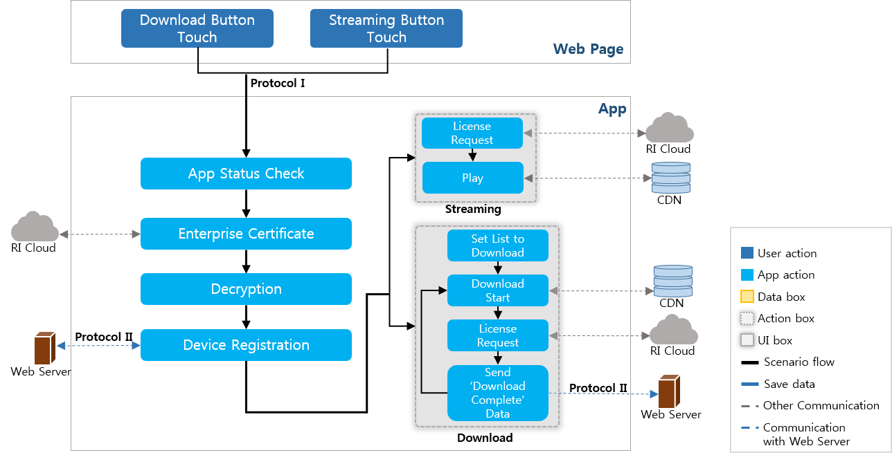
또한, 두 가지의 서비스에서 ‘기기 등록’이 이루어 지기 때문에, ‘기기 등록 해제’ 기능을 공통으로 가지고 있습니다. 기기 등록 해제의 시나리오는 다음과 같습니다.
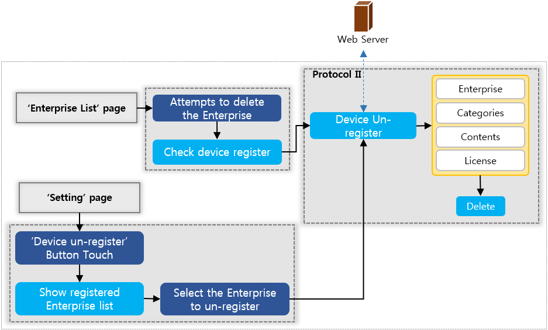
Download가 완료된 콘텐츠는 PallyCon Player의 ‘콘텐츠 리스트’에서 확인이 가능합니다. 콘텐츠의 사용자가 콘텐츠 재생, 북마크 설정, 즐겨찾기 설정하는 행위를 통해 ‘즐겨찾기 리스트’, ‘북마크 리스트’, ‘최근 재생 콘텐츠 리스트’에서도 확인이 가능합니다. 각 리스트에서 재생할 콘텐츠를 선택할 때의 시나리오는 다음과 같습니다.

앱(PallyCon Player) 상태 확인
URL Scheme을 통해 PallyCon Player를 실행하게 되었을 때, 각 기능들이 동작하기 위해 PallyCon Player의 상태를 확인합니다. PallyCon Player의 상태가 ‘다운로드’, ‘재생’, ‘기기 등록 해제 확인 요청’ 중에는 URL Scheme으로의 접근을 막습니다.
업체 인증
URL Scheme으로 접근한 데이터 중 ‘site_id’를 추출하여, 업체 인증을 시작합니다. ‘site_id’는 INKA와 계약할 때 발급받는 정보 중 하나로서, 암호화를 하지 않아도 되는 값입니다.
업체 인증은 INKA의 PallyCon Cloud 서비스 사이트와 통신하기 때문에, 개발자가 따로 개발할 필요가 없습니다. 다만, 여기서 개발자가 알아야 하는 내용은 업체 인증이 성공하면 그 응답 데이터로 ‘site_id’에 해당하는 업체명과 URL Scheme의 ‘info’값의 데이터 암호화를 푸는데 사용되는 Key와 IV를 전달받는 다는 것입니다.

AES 256 암/복호화 Key, IV(Initial vector):
- 웹 서버와 연동하는 데이터(Protocol I/Protocol II)의 AES256 암/복호화를 위한 Key는 INKA와 계약할 때 발급받습니다. 이 것은 ‘site_id’에 매칭되는 값으로 전달되기 때문에 반드시 계약할 때 전달받은 site_id와 AES256 Key를 사용해야만 합니다. (AES256 Key와 함께 사용되는 Initial Vector는 16 byte의 고정값으로 ’1234567890abcdef’ 입니다.)
- 업체 인증을 통해 전달받은 업체명과 Key, IV는 기기의 DB에 저장됩니다.
- INKA의 RI Cloud 서버와의 통신은 PKI를 이용하기 때문에 통신과 DB에서 사용되는 데이터는 강력하게 보호받습니다.
복호화
암호화 및 복호화는 Service Site의 웹 서버와 PallyCon Player 사이에 통신하는 모든 데이터에서 이루어 집니다. 하지만, 이 섹션에서는 각 서비스 시나리오에서 업체 인증 후에 복호화가 이루어지는 시나리오에 대해 설명합니다.
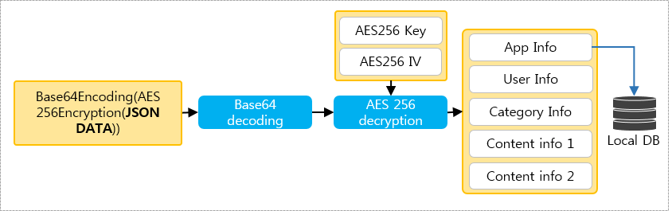
PallyCon Cloud 서비스 사이트로부터 전달받은 AES256 Key/IV를 통해 URL Scheme의 ‘info’에 해당하는 값을 복호화합니다. 복호화에 성공하면, Download와 Streaming 재생에 필요한 모든 정보를 가지고 있는 JSON 스트링을 얻습니다. JSON 스트링에서 업체정보를 추출하여 DB에 저장합니다.
기기 등록
기기 등록을 하기 위해서 복호화된 JSON 스트링에서 사용자 정보와 사용자의 기기에서 기기정보를, PallyCon Player에서 앱 정보를 추출합니다. 추출한 정보를 JSON 스트링으로 변환하여 Service Site의 웹 서버로 기기 등록 요청을 합니다.
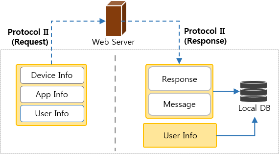
기기 등록 요청에 대한 웹 서버의 응답 데이터가 전송되면, 데이터를 복호화한 후 성공여부를 확인하고, 웹 서버에서 전달해준 응답 데이터에서 메시지를 추출하여 PallyCon Player의 알럿으로 표시합니다. 기기 등록에 성공하면, 사용자 정보를 DB에 저장합니다.
Streaming
iOS에서는 WiFi에서만 스트리밍 재생이 가능합니다.
Apple 규정(9.4)에서 셀룰러 모드에서의 Streaming 재생은 반드시 HLS (HTTP Live Stream)를 사용하도록 규정하고 있습니다. 하지만, PallyCon Player에서의 Streaming 재생은 Progressive Download Play를 사용하기 때문에, iOS에서의 스트리밍은 Wifi 모드에서만 가능합니다.
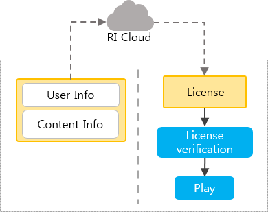
Streaming 재생을 하기 위하여 PallyCon Player에서는 ‘사용자 정보’와 ‘콘텐츠 정보’를 이용하여 INKA의 PallyCon Cloud 서비스 사이트에서 License를 발급받은 뒤, License가 유효한지 확인한 후 재생을 시작합니다.
Download
Download는 Single-Download와 Multi-Download가 있습니다. 일반적으로 Single-Download는 사용자가 Servcie Site의 웹 페이지에서 다운로드를 원하는 콘텐츠 목록의 다운로드 버튼은 터치하여 이루어지고, Multi-Download는 사용자가 Servcie Site의 웹 페이지에서 다운로드를 원하는 콘텐츠를 선택한 후 멀티 다운로드 버튼을 터치하여 이루어 집니다.

사용자가 선택한 콘텐츠를 다운로드 하기 위하여 PallyCon Player에서는 다운로드 목록을 생성합니다. Single-Download의 경우 다운로드 목록은 1개일 것이고, Multi-Download의 경우 다운로드 목록은 n개일 것입니다.
다운로드 목록의 0번째 행부터 다운로드를 시작합니다. 파일의 다운로드가 완료되면 다운로드 목록의 정보를 DB에 저장합니다.
사용자 정보와 콘텐츠 정보를 이용해 PallyCon Cloud 서비스 사이트로부터 다운로드 받은 파일의 License를 발급받습니다. 만약 License를 발급 받지 못하더라도 다운로드 실패로 결정하지 않습니다. 이유는 로컬 재생을 시도할 경우 License를 확인할 때, License가 없고 온라인 상태이면, License 발급을 시도하기 때문입니다.
사용자가 콘텐츠를 기기로 다운로드를 완료하였다는 정보를 Service SIte의 웹 서버로 전달하게 됩니다. 이 정보를 웹 서버에 저장하여, 이후에 업체에서 환불이나 통계 자료로 사용할 수 있습니다.
만약, 다운로드 목록에 다운로드를 할 콘텐츠가 남아있다면, 다음 목록의 다운로드를 시도합니다. 없을 경우, PallyCon Player는 보관함의 최상위 리스트로 이동하게 됩니다.
유효성 체크
콘텐츠를 재생하기 전 가장 먼저 하는 것은 Local DB의 업체 정보에서 재생 타입(play_type)을 확인하는 것입니다. 재생 타입에 따라 유효성 체크를 하는지에 대한 여부를 판단합니다.
유효성 체크를 해야 한다면, ‘사용자 정보’, ‘기기 정보’, ‘콘텐츠 정보’를 추출하여 Service Site의 웹 서버에 콘텐츠의 유효성 확인을 요청합니다. 웹 서버는 그 응답으로 유효성 여부와 메시지를 전달해 줍니다.

콘텐츠 유효성 상태는 4가지로 구분됩니다.
- 재생 가능: 재생이 가능한 상태로 License Rule 정보에 맞춰 재생하라는 응답입니다.
- 휴강: 사용자가 업체에 잠시 콘텐츠를 사용하지 않는 상태라는 응답입니다. 이 경우, License를 삭제합니다.
- 환불: 사용자가 업체에 환불 받은 콘텐츠입니다. 이 경우, 콘텐츠는 패키지로 서비스 되므로 콘텐츠의 카테고리와 그에 해당하는 모든 콘텐츠(License 포함)까지 모두 삭제합니다.
- 재생 제한: License나 콘텐츠 등 아무것도 지우지 않으나, 특수한 사정으로 재생을 제한합니다.
진도 정보 전달(LMS)
PallyCon Player의 LMS는 재생 구간(sections)과 진도율(percent), 재생 완료 시간(last play time)으로 구성됩니다.
- LMS는 사용자가 Download/Streaming 재생 시도시 PallyCon Player로 전달하는 데이터 중 콘텐츠 정보에 포함되어 있습니다.
- PallyCon Player는 Local 재생 또는 Streaming 재생을 시작할 때 이 정보를 사용합니다.
- 사용자가 재생을 완료할 때, PallyCon Player에서는 LMS 정보를 다시 설정하여 웹 서버로 전달합니다.
PallyCon Player에서의 진도 정보 설정
재생 구간 (sections)
- 이전 재생 구간과 새로운 재생 구간은 합쳐서 전달할 재생 구간을 생성합니다.
- ex) 이전 재생 구간: “0:20” + 새로운 재생 구간: “15:40” = 전달할 재생 구간: “0:40”
진도율(percent)
- 전달할 재생 구간의 시간 간격을 계산하여 전체 시간에 대한 퍼센트를 계산합니다.
재생 완료 시간(last play time)
- 사용자가 완료 버튼을 누를 때의 시간
기기 등록 해제
기기 등록 해제는 기기 정보와 사용자 정보를 웹 서버에 전달하면서 요청합니다. 그에 대한 응답으로 Service Site의 웹 서버는 기기 등록 해제 성공 여부와 메시지를 전달합니다. PallyCon Player에서는 기기 등록 해제가 성공하면, 업체와 카테고리, 콘텐츠, License를 삭제합니다.
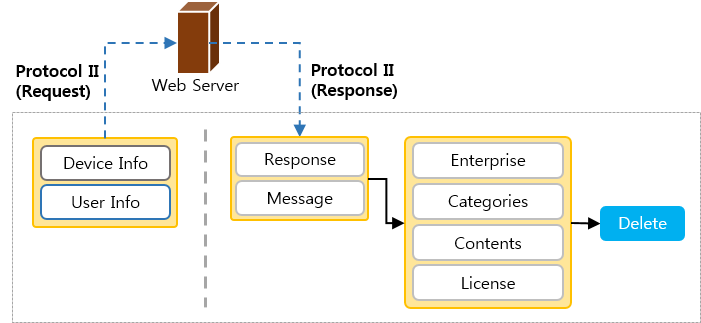
JSON Standards
이 섹션에서는 APIs에서 설명한 JSON DATA의 규격에 대하여 상세한 설명을 제공합니다. JSON에서 쓰이는 모든 값은 String이기 때문에, “”안에 값을 넣어 주셔야만 합니다.
- JSON String의 가독성을 높이기 위해 Parameter를 줄바꿈으로 구분하였습니다. 하지만, 실제 데이터에서는 줄바꿈이나 Parameter사이에 공백을 허용하지 않으니 주의하세요.
- PallyCon Player에서 전달하는 Request Data의 모든 parameter는 필수입니다.
Download / Streaming Standard
웹 페이지의 Download / Streaming 버튼에 설정해야 하는 데이터 입니다.
Single-Download_JSON_String_Streaming_JSON_String
{
"user_id":"ID",
"current_url":"http://demo.netsync.co.kr/download_new2.asp",
"enterprise_icon_url":"http://demo.netsync.co.kr/KR2/image/a_logo.png",
"play_type":"0",
"service_manager":"http://demo.netsync.co.kr/LIC/service_manager.asp",
"log_type":"0",
"category_name":"Category",
"category_person":"Person",
"category_image":"http://demo.netsync.co.krKR2/image/korean_icon.png",
"category_assortment":"Assortment",
"contents":[
{
"content_file":"http://112.136.244.30/1_low_language_basic.mp4.ncg",
"content_name":"Content",
"content_qna":"QnA",
"info_orderID":"OrderID",
"info_one":"One",
"info_two":"Two",
"info_three":"Three",
"info_four":"Four",
"last_play_time":"10",
"lms_sections":"0:10",
"lms_percent":"10"
}
]
}
Multi-Download_JSON_String_(two_Contents)
{
"user_id":"ID",
"current_url":"http://demo.netsync.co.kr/download_new2.asp",
"enterprise_icon_url":"http://demo.netsync.co.kr/KR2/image/a_logo.png",
"play_type":"0",
"service_manager":"http://demo.netsync.co.kr/LIC/service_manager.asp",
"log_type":"0",
"category_name":"Category",
"category_person":"Person",
"category_image":"http://demo.netsync.co.krKR2/image/korean_icon.png",
"category_assortment":"Assortment",
"contents": [
{
"content_file":"http://112.136.244.30/1_low_language_basic.mp4.ncg",
"content_name":"Content",
"content_qna":"QnA",
"info_orderID":"OrderID",
"info_one":"One",
"info_two":"Two",
"info_three":"Three",
"info_four":"Four",
"last_play_time":"10",
"lms_sections":"0:10",
"lms_percent":"10"
},
{
"content_file":"http://112.136.244.30/1_low_language_basic.mp4.ncg",
"content_name":"Content",
"content_qna":"QnA",
"info_orderID":"OrderID",
"info_one":"One",
"info_two":"Two",
"info_three":"Three",
"info_four":"Four",
"last_play_time":"10",
"lms_sections":"0:10",
"lms_percent":"10"
}
]
}
user_id : 서비스 사이트 사용자 ID로, 반드시 사용해야 하는 parameter입니다. PallyCon Player에서는 웹 페이지 만료시 null로 전달받는 것에 대한 처리가 되어있습니다.
current_url : Download를 취소하거나 Streaming을 완료하였을 때, 웹페이지로 이동하기 위한 URL으로, parameter는 반드시 사용할 필요는 없습니다. 다만, 사용하지만 값이 없을 경우 빈값(“”)으로 넣어 주셔야 합니다.
enterprise_icon_url : PallyCon Player의 업체 리스트에서 보여질 아이콘의 파일 주소로, parameter는 반드시 사용할 필요는 없습니다. 사용할 경우, parameter의 값이 없을 경우 리스트에는 빈 공백/기본 이미지로 보이게 됩니다.
play_type : PallyCon Player에서 다운로드 받은 콘텐츠를 어떤 조건에서 재생하는지 설정하는 값으로, parameter는 반드시 사용할 필요는 없습니다. 하지만, 사용할 경우 반드시 값을 넣어 주셔야 합니다. 사용하지 않을 경우, 기본값은 '2'로 설정됩니다.
- 0: 온라인 상태에서는 콘텐츠 재생에 대한 유효성 체크(Validity check)를 하고 그 응답값에 따라 재생 여부를 결정하고, 오프라인 상태에서는 무조건 재생
- 1: 온라인 상태에서만 콘텐츠 재생에 대한 유효성 체크(Validity check)를 하여 그 응답값에 따라 재생 여부를 결정
- 2: 온라인, 오프라인에서 무조건 재생
service_manager : PallyCon Player에서 웹 서버와 통신할 때 사용하는 Service Manager URL으로, parameter는 반드시 사용해야 합니다. 또한 빈 값은 허용하지 않습니다.
log_type
: PallyCon Player에서 로그 설정을 할 수 있는 parameter로, 반드시 사용할 필요는 없습니다. 하지만 사용할 경우 반드시 값을 넣어 주셔야합니다. 사용하지 않을 경우, 기본값은 '2'로 설정됩니다.
연동 테스트나 고객 서포트 시 통신, 재생, 라이선스 정보를 얻기 위해 로그를 활용할 수 있습니다.
- 0: Local DB에 로그를 3000 byte만큼 가지고 있다가 통신이나 라이선스 등 업체에서 수정해야 할 내용이 있는 경우, 웹 서버로 전송하도록 설정 (아직 제공하지 않음)
- 1: 서비스 전 PallyCon Player와 연동 테스트를 하기 위해 설정되는 값, Local DB에 길이 제한 없이 로그를 저장. '환경 설정’ 페이지에서 로그 버튼이 나타나며 로그를 바로 확인 가능
- 2: 로그를 사용하지 않음
category_name : PallyCon Player의 카테고리 리스트에 보여지는 카테고리 이름으로, parameter는 반드시 사용해야 합니다. 모든 문자를 허용하고, 빈값은 허용하지 않습니다.
category_person : 카테고리 리스트에 카테고리 이름과 함께 보여지는 카테고리 기타 정보를 넣을 수 있는 값으로, parameter는 반드시 사용해야 합니다. 모든 문자를 허용하고, 빈값은 허용하지 않습니다.
category_image : 카테고리 리스트에 보여질 카테고리 아이콘의 파일 주소로, parameter는 반드시 사용할 필요는 없습니다. parameter의 값이 없을 경우, 리스트에는 빈 공백/기본 이미지로 보이게 됩니다.
category_assortment : 카테고리를 구분하기 위한 parameter로, 추후에 리스트 정렬 방식에 사용될 계획입니다. 이 값은 반드시 사용할 필요는 없습니다. 빈값을 허용합니다.
contents : 다운로드되거나 재생되는 콘텐츠에 대한 정보가 들어있는 parameter입니다. 멀티 다운로드를 진행할 경우, contents에 해당하는 콘텐츠 정보를 배열 형태로 넣어 주셔야 합니다.
Single-download (Streaming): "contents":[{"content_file":"",...}]
Multi-download: "contents":[{"content_file":"",...},{"content_file":"",...},...]
content_file : 다운로드 / 재생 될 파일이 있는 서버 주소(URL)로, parameter는 반드시 사용해야 합니다. 빈값은 허용하지 않습니다.
content_name : PallyCon Player의 콘텐츠 리스트에 보여질 콘텐츠 이름으로, parameter는 반드시 사용해야 합니다. 모든 문자를 허용하고, 빈값은 허용하지 않습니다.
content_qna : 재생 중 질문을 남기기 위해 브라우저의 웹페이지로 이동하기 위한 URL 주소로, parameter는 반드시 사용할 필요는 없습니다. 빈값은 허용합니다.
info_orderID : 콘텐츠의 주문 정보입니다. 이 정보는 라이선스를 발급받을 때 구매 확인을 위한 정보로 활용되며, parameter는 필수로 입력해야 합니다. 또한 빈값은 허용하지 않습니다.
info_one, info_two, info_three, info_four : 다운로드 완료, 유효성 체크 정보 전달시 콘텐츠의 구분을 위한 추가정보로, parameter는 필수로 입력할 필요는 없습니다. 또한 빈값을 허용합니다.
last_play_time : 콘텐츠의 마지막 재생 시간으로 이전에 사용자가 이 콘텐츠를 재생을 완료한 시점입니다. 사용자가 다시 재생할 때 이 시간 부터 재생하게 됩니다. 단위는 '초'입니다. 단위는 생략하며, 필수로 입력해야하는 parameter입니다. 빈값은 허용하지 않습니다.
lms_sections
: 사용자가 재생했었던 구간에 대한 정보입니다. 단위는 '초'이고, 생략합니다. 필수로 입력하는 parameter입니다. 빈값은 재생한 구간이 없을 경우, 허용합니다. 공백이 포함되어 있으면 안됩니다.
ex) “lms_sections”:“0:30,50:100”
사용자는 0초부터 30초, 50초부터 100초를 재생했었습니다.
lms_percent : 콘텐츠 전체 시간에 대한 사용자가 재생한 시간의 퍼센트입니다. 이 값은 콘텐츠 리스트에 진도율에 사용되게 됩니다. 단위는 ’%'이고, 생략합니다. 필수로 입력하는 parameter입니다. 빈값은 허용하지 않습니다.
Device Registration Standard
Request data
{
"mode":"Device Register",
"site_id":"Site ID",
"user_id":"test2",
"device_id":"DID01_WZnTQFOHmZiv1vsevtorDtFHRNc=",
"device_model":"iPod5,1",
"app_version":"1.0"
}
mode : 모든 기능에서 웹 서버와 통신은 하나의 Service manager URL을 사용합니다. Service manager URL에서 기능별 분기를 태울 수 있도록 하는 값으로 기기 등록은 'Device Register'입니다.
site_id : CP Admin 페이지에서 확인이 가능한 업체에게 발급되는 값으로 고정값입니다.
user_id : 기기 DB에 저장되어 있는 사용자 ID 값입니다.
device_id : 기기에서 추출한 기기 ID입니다.
- iOS: UUID를 이용하여 기기 ID를 생성합니다. PallyCon Player와 웹 서버의 기기 등록 해제 없이 공장 초기화를 하고 다시 PallyCon Player를 설치할 경우, 새로운 기기 ID를 만들기 때문에 기기 등록이 실패됩니다. 이 경우에는 업체에 연락하여 기기 등록 해제를 요청해야 합니다.
- Android: 기기내의 여러 정보를 조합하여 생성합니다.
device_model
- iOS: 기기 플랫폼을 추출합니다. ex) iPhone6,1(iPhone5S)
- Android: 기기의 환경설정에 있는 기기 모델명을 추출합니다.
app_version : 마켓에 등록되어 표시되고 있는 PallyCon Player 버전입니다.
Response data
{
"response":"Y",
"message":"SUCCESS",
"message_two":""
}
response : 기기 등록 성공 여부로, parameter는 필수로 입력하셔야 합니다. 또한 빈값은 허용하지 않습니다. 값은 'Y | N'으로 내려주셔야 합니다.
message : 기기 등록 성공 여부에 맞는 메시지로 PallyCon Player 에서 알럿으로 표시됩니다. 이 parameter는 필수로 입력하셔야 합니다. parameter의 값은 빈값을 허용하며, 빈값일 경우 성공 여부에 따라 '기기 등록에 성공하였습니다.’ 혹은 '기기 등록에 실패하였습니다.’ 라는 메시지를 기본값으로 설정됩니다.
message_two : 성공 여부와 메시지 외에 사용할 수 있는 인터페이스 입니다. 이 parameter는 Android에서 'device_id'가 동일하게 추출되는 경우에 'NOT_SUPPORT_DEVICE_MODEL'을 값으로 넣어주면, device_id를 다시 추출하여 등록을 다시 시도합니다.
Download Complete Standard
Request data
{
"mode":"Download Complete",
"site_id":"Site ID",
"user_id":"test2",
"device_id":"DID01_WZnTQFOHmZiv1vsevtorDtFHRNc=",
"date":"201405191120",
" download_status":"Y",
" info_orderID":"0",
" info_one":"",
"info_two":"",
"info_three":"A",
"info_four":"1"
}
mode : 모든 기능에서 웹 서버와 통신은 하나의 Service manager URL을 사용합니다. Service manager URL에서 기능별 분기를 태울 수 있도록 하는 값으로 다운로드 완료는 'Download Complete'입니다.
site_id : Cloud Admin 페이지에서 확인이 가능한 업체에게 발급되는 값으로 고정값입니다.
user_id : 기기에 저장되어 있는 사용자 ID 값입니다.
deviceid_
- iOS: UUID를 이용하여 기기 ID를 생성합니다. PallyCon Player와 웹 서버의 기기 등록 해제 없이 공장 초기화를 하고 다시 PallyCon Player를 설치할 경우, 새로운 기기 ID를 만들기 때문에 기기 등록이 실패됩니다. 이 경우에는 업체에 연락하여 기기 등록 해제를 요청해야 합니다.
- Android: 기기내의 여러 정보를 조합하여 생성합니다.
date
: 기기에서 추출한 현재 날짜입니다. GMT가 아니니 주의하세요.
날짜 규격 : yyyyMMddHHmm
ex) 201412012359 -> 2014년 12월 1일 23시 59분
download_status : 다운로드 완료 기능에서 다운로드가 완료되었음을 알리는 parameter입니다. 값은 Y | N으로 표시됩니다.
info_orderID, info_one, info_two, info_three, info_four : Protocol I(URL Scheme)으로 전달받은 값을 기기에 저장하였다가 불러온 parameter와 값들입니다. 웹 서버에서 콘텐츠 구분을 위한 추가 정보로 활용됩니다.
Validity Check Standard
Request data
{
"mode":"Validity Check",
"site_id":"Site ID",
"user_id":"test2",
"device_id":"DID01_WZnTQFOHmZiv1vsevtorDtFHRNc=",
"category_name":"[A사_무료기획]2014국어특강",
"content_name":"1강_저_국어의 기초",
"info_orderID":"0",
"info_one":"",
"info_two":"",
"info_three":"A",
"info_four":"1"
}
mode : 모든 기능에서 웹 서버와 통신은 하나의 Service manager URL을 사용합니다. Service manager URL에서 기능별 분기를 태울 수 있도록 하는 값으로 유효성 체크은 'Validity Check'입니다.
site_id : Cloud Admin 페이지에서 확인이 가능한 업체에게 발급되는 값으로 고정값입니다.
user_id : 기기에 저장되어 있는 사용자 ID 값입니다
device_id : 기기에서 추출한 기기 ID입니다.
- iOS: UUID를 이용하여 기기 ID를 생성합니다. PallyCon Player와 웹 서버의 기기 등록 해제 없이 공장 초기화를 하고 다시 PallyCon Player를 설치할 경우, 새로운 기기 ID를 만들기 때문에 기기 등록이 실패됩니다. 이 경우에는 업체에 연락하여 기기 등록 해제를 요청해야 합니다.
- Android: 기기내의 여러 정보를 조합하여 생성합니다.
category_name : 기기 DB에 저장되어 있는 카테고리 이름입니다.
content_name : 기기 DB에 저장되어 있는 콘텐츠 이름입니다.
info_orderID, info_one, info_two, info_three, info_four : Protocol I(URL Scheme)으로 전달받은 값을 기기에 저장하였다가 불러온 parameter와 값들입니다. 웹 서버에서 콘텐츠 구분을 위한 추가 정보로 활용됩니다.
Response data
{
"response":"0",
"message":"SUCCESS"
}
response : 재생하려는 콘텐츠의 유효성을 서버에서 체크하여 결과를 PallyCon Player에 전달해 주는 parameter입니다. 빈값은 허용하지 않습니다. 값은 '0 | 1 | 2 | 3’ 중 하나를 내려주셔야 합니다.
- 0: 재생 허가
- 1: 휴강 (해당 콘텐츠의 라이선스를 삭제합니다.)
- 2: 환불 (해당 콘텐츠가 포함되어 있는 카테고리까지 삭제합니다.)
- 3: 재생 제한
message : PallyCon Player에서 알럿으로 표시하는데 사용할 서버의 메시지를 넣는 parameter입니다. 필수로 사용해야만 합니다. 재생을 허가하는 경우 (response: 0)에는 빈값을 허용합니다. 그외에는 빈값을 허용하지 않습니다.
LMS Standard
Request data
{
"mode":"LMS",
"site_id":"Site ID",
"user_id":"test3",
"device_id":"DID01_WZnTQFOHmZiv1vsevtorDtFHRNc=",
"date":"201407170506",
"category_name":"Test",
"content_name":"1강_저_국어의 기초",
"info_orderID":"0",
"info_one":"",
"info_two":"",
"info_three":"A",
"info_four":"1",
"last_play_time":"0",
"lms_percent":"0",
"lms_sections":"0:10,11:30"
}
mode : 모든 기능에서 웹 서버와 통신은 하나의 Service manager URL을 사용합니다. Service manager URL에서 기능별 분기를 태울 수 있도록 하는 값으로 유효성 체크은 'Validity Check'입니다.
site_id : Cloud Admin 페이지에서 확인이 가능한 업체에게 발급되는 값으로 고정값입니다.
user_id : 기기에 저장되어 있는 사용자 ID 값입니다
device_id : 기기에서 추출한 기기 ID입니다.
- iOS: UUID를 이용하여 기기 ID를 생성합니다. PallyCon Player와 웹 서버의 기기 등록 해제 없이 공장 초기화를 하고 다시 PallyCon Player를 설치할 경우, 새로운 기기 ID를 만들기 때문에 기기 등록이 실패됩니다. 이 경우에는 업체에 연락하여 기기 등록 해제를 요청해야 합니다.
- Android: 기기내의 여러 정보를 조합하여 생성합니다.
date : 진도 정보를 전달할 때의 날짜 입니다. (YYYYMMDDHHmm)
category_name : 기기 DB에 저장되어 있는 카테고리 이름입니다.
content_name : 기기 DB에 저장되어 있는 콘텐츠 이름입니다.
info_orderID, info_one, info_two, info_three, info_four : Protocol I(URL Scheme)으로 전달받은 값을 기기에 저장하였다가 불러온 parameter와 값들입니다. 웹 서버에서 콘텐츠 구분을 위한 추가 정보로 활용됩니다.
last_play_time : 사용자가 재생을 완료할 때의 시간입니다. 단위는 '초'입니다. 단위는 생략되어 있습니다.
lms_percent : 진도율로 사용자가 재생했던 부분의 퍼센트입니다. 단위는 ’%'입니다. 단위는 생략되어 있습니다.
lms_sections : 재생 구간으로 사용자가 재생했던 부분의 구간들입니다. 단위는 '초'입니다. 단위는 생략되어 있습니다.
Response data
{
"response":"Y",
"message":"Success"
}
response : 진도 정보 처리 성공 여부로, parameter는 필수로 입력하셔야 합니다. 또한 빈값은 허용하지 않습니다. 값은 'Y | N'으로 내려주셔야 합니다.
message : 진도 정보 처리 성공 여부에 맞는 메시지입니다. PallyCon Player 에서는 별도로 처리되지 않습니다.
Device Un-registration Standard
Request data
{
"mode":"Device Release",
"site_id":"Site ID",
"user_id":"test3",
"device_id":"DID01_WZnTQFOHmZiv1vsevtorDtFHRNc="
}
mode : 모든 기능에서 웹 서버와 통신은 하나의 Service manager URL을 사용합니다. Service manager URL에서 기능별 분기를 태울 수 있도록 하는 값으로 기기 등록 해제는 'Device Release'입니다.
site_id : Cloud Admin 페이지에서 확인이 가능한 업체에게 발급되는 값으로 고정값입니다.
user_id : 기기에 저장되어 있는 사용자 ID 값입니다
device_id : 기기에서 추출한 기기 ID입니다.
- iOS: UUID를 이용하여 기기 ID를 생성합니다. PallyCon Player와 웹 서버의 기기 등록 해제 없이 공장 초기화를 하고 다시 PallyCon Player를 설치할 경우, 새로운 기기 ID를 만들기 때문에 기기 등록이 실패됩니다. 이 경우에는 업체에 연락하여 기기 등록 해제를 요청해야 합니다.
- Android: 기기내의 여러 정보를 조합하여 생성합니다.
Response data
{
"response":"Y",
"message":"Success"
}
response : 기기 등록 해제 성공 여부로, parameter는 필수로 입력하셔야 합니다. 또한 빈값은 허용하지 않습니다. 값은 'Y | N'으로 내려주셔야 합니다.
message : 기기 등록 해제 성공 여부에 맞는 메시지로 PallyCon Player 에서 알럿으로 표시됩니다. 이 parameter는 필수로 입력하셔야 합니다. parameter의 값은 빈값을 허용하며, 빈값일 경우 성공 여부에 따라 '기기 등록 해제에 성공하였습니다.’ 혹은 '기기 등록 해제에 실패하였습니다.’ 라는 메시지를 기본값으로 설정됩니다.
Log
연동 테스트를 하기 위해 제공하는 ‘로그 보기’ 기능 사용 방법에 대해 설명합니다.
로그에서 표시되는 내용
- PallyCon Player와 웹 서버의 주고 받는 요청/응답 데이터
- 다운로드 상태/정보
- 라이선스 확인/발급 정보
- 콘텐츠 재생 정보
로그 보기 설정
로그는 URL Scheme의 ‘Download/Streaming’ JSON DATA (log_type)에서 설정할 수 있으며, PallyCon Player의 ‘환경설정’ 페이지에서 확인 가능합니다. 환경 설정에서 ‘로그 보기’ 버튼을 터치하면, ‘log_type’이 ‘1’로 설정되어 있는 업체들의 리스트가 표시됩니다. 리스트에서 로그를 보고자 하는 업체를 터치하면 해당 업체의 로그를 볼 수 있습니다.
로그 내용
로그 내용은 아래의 그림과 같은 형태로 보여지게 됩니다. 로그는 우측 상단의 ‘새로고침’ 버튼을 통해 리셋을 할 수 있습니다.

Revision History
이 테이블은 PallyCon Player 연동 가이드의 수정사항에 대해 설명한 것입니다.
| Date | Detail |
|---|---|
| 2014.08.19 | PallyCon Player Mobile 연동 가이드 제작 |
| 2015.01.13 | LMS 기능 추가(Detail, Scenario, Standards) |
PC 플레이어 연동
Introduction
이 문서는 PallyCon PC Web Player와 Service Site의 웹 서버와 연동에 도움을 주기 위한 가이드입니다
PallyCon PC Web Player에 대하여
PallyCon PC Web Player는 Service Site의 웹 페이지에서 구현되는 Player입니다. 그렇기 때문에, 사용자가 웹 페이지에서 재생하고자 하는 콘텐츠를 클릭했을 때, 바로 재생하기 위한 Streaming 기능 만을 제공합니다.
PallyCon PC Web Player는 스트리밍 재생만 제공하기 때문에 별도의 기기 대수 체크를 하지 않습니다. 그 대신 동시 접속에 대한 제어를 통해 기기 대수 제어 기능을 할 수 있습니다.
PallyCon PC Web Player는 원본(non-DRM)/패키징(DRM) 동영상 콘텐츠 재생이 가능합니다. Streaming은 패키징(DRM) 콘텐츠의 경우 Progressive Download Play만을 지원하고, 원본(non-DRM) 콘텐츠의 경우 Progressive Download Play와 Http Live Streaming을 지원합니다. 영상 지원 포맷은 모바일과의 통합 서비스를 위해 DRM 콘텐츠는 MP4를 권장합니다. 하지만, non-DRM 콘텐츠는 MP4를 비롯하여, WMV, MPEG2-TS, Matroska, AVI, FLV를 지원합니다.
| Content | Video Format | Streaming Type |
|---|---|---|
| DRM Contents | MP4 | Progressive Download Play |
| non-DRM Contents | MP4, WMV, MPEG2-TS, Matroska, AVI, FLV | Progressive Download Play, Http Live Streaming |
*PallyCon PC Web Player는 재생에 관련된 다양한 기능을 제공합니다. *
| Features | Description |
|---|---|
| 북마크 | 재생 중 원하는 지점을 표시하여 쉽게 이동할 수 있습니다. 메모기능이 제공되고, Service Site와의 연동이 가능합니다. |
| 진도 정보 | 콘텐츠의 재생을 얼만큼 했는지에 재생 구간과 퍼센트로 관리될 수 있습니다. Service Site와의 연동이 가능합니다. |
| 이어보기 | 콘텐츠를 재생할 때, 이전에 재생을 완료한 시점부터 재생할 수 있습니다. Service Site와의 연동이 가능합니다. |
| 배속 | 0.8 배속부터 2.0배속까지 원하는 속도록 콘텐츠를 재생할 수 있습니다. |
| 강의 재생 목록 제공 | 개발자가 원하는 콘텐츠를 리스트 형태로 Player우측에 표시할 수 있습니다. |
이 문서의 활용
이 문서를 통해 1. PallyCon PC Web Player를 적용하는 방법 2. PallyCon PC Web Player와 Service Site의 웹 서버와 주고 받는 데이터의 규격과 PallyCon PC Web Player 시나리오에 대한 세부적인 설명에 대한 정보를 얻을 수 있습니다.
필요 조건
PallyCon PC Web Player는 원본 콘텐츠와 NCG로 패키징된 콘텐츠를 재생하기 때문에, 각 콘텐츠들이 준비되어 있어야합니다.
DRM 콘텐츠를 재생하기 위해서는 License가 필요합니다. License를 생성하는데 필요한 콘텐츠 사용 권한 정보를 조회하기 위한 Page가 생성되어 CP Admin에 등록되어 있어야 합니다.
PallyCon PC Web Player와 Service Site의 웹 서버와 주고 받는 데이터를 설정할 수 있는 기술적인 이해와 적용이 필요합니다.
작업 순서
위 '필요조건'을 만족한다면, 아래의 순서대로 PallyCon PC Web Player 연동 작업을 진행합니다.
| STEP1 | 전체 흐름을 파악하기 위해 최소 한번 정독합니다. |
| STEP2 | 문서의 규격에 맞게 Service Site와 Service Site의 웹 서버를 구축합니다. |
| STEP3 | 서비스 시나리오대로 진행을 하면서 연동 테스트를 시작합니다. |
APIs
HTTP Protocol I: PallyCon PC Web Player Page 호출 (POST method)
Service Site의 웹 페이지에서 사용자가 재생하고자 하는 콘텐츠를 선택하면, PallyCon PC Web Player를 호출하여 선택한 콘텐츠를 재생합니다.
PallyCon PC Web Player Page의 URL에 재생하고자 하는 콘텐츠의 정보를 JSON으로 생성하여 Base64로 인코딩한 뒤에 POST 방식으로 전달합니다.
Format
- UTF-8 String Encoding 사용
- POST Method
- URL: http://pcplayer.pallycon.com
- Body
Parameter I: data Value: Base64Encoding(JSON DATA)String Parameter II: lang Value: 한글(KR), 영어(EN)http://pcplayer.pallycon.com?data=Base64Encoding(JSON DATA)String&lang=KR
Security
JSON DATA 중 DRM User ID, File URL, Order ID는 반드시 AES256으로 암호화하여 전달하셔야만 합니다.
Algorithm
- Algorithm : AES
- Keysize : 256 bit
- Mode : CBC
Key, Initial vector
- Key: 32 byte (CP Admin 페이지에서 서비스 사이트 별 확인 가능)
- Initial vector: 16 byte (고정값: 123456890abcdef)
Padding
- PKCS7을 사용합니다.
HTTP/HTTPs Protocol II: Service Manager URL (POST method)
PallyCon PC Web Player와 Service Site의 통신은 HTTP/HTTPs를 통해 이루어 집니다. 또한 JSON 포맷으로 세부 데이터를 생성하여 POST 방식으로 전달합니다.
PallyCon PC Web Player와 Service Site의 통신을 통해 데이터를 주고 받는 기능은 아래와 같습니다.
- 북마크
- 진도 정보 및 이어보기 정보 전달
DETAILS
HTTP/HTTPs Protocol은 PallyCon PC Web Player에서 Service Site의 웹 서버로 요청하는 데이터 (REQUEST DATA)와 웹 서버에서 PallyCon PC Web Player로 응답하는 데이터(RESPONSE DATA)로 이루어집니다.
REQUEST DATA
PallyCon PC Web Player에서 통신을 통해 데이터를 주고 받는 기능은 하나의 URL (Service manager URL)을 사용하게 됩니다. Service manager URL은 PallyCon PC Web Player 페이지를 호출할 때 넘겨주는 JSON 데이터에 포함되어야 합니다.
Format
- UTF-8 String Encoding 사용
- POST Method
- URL: http(s)://Service manager URL
- Body
Parameter: data Value: Base64Encoding(JSON DATA)String
http(s)://Service_Manager_URL?data=Base64Encoding(JSON DATA)String
JSON DATA
하나의 URL에서 서로 다른 4개의 데이터를 처리해야 하기 때문에 JSON DATA안에는 각 2개의 mode를 통해 구분할 수 있도록, parameter를 제공하고 있습니다.
- 북마크: {“mode”:“bookmark”,…}
- 진도정보 및 이어보기 정보 전달: {“mode”:“pc_lms”,…}
RESPONSE DATA
Format
- Base64Encoding(JSON DATA)String
- UTF-8 String Encoding 사용
JSON DATA
- PallyCon PC Web Player의 요청에 대한 응답
JSON Standards
이 섹션에서는 APIs에서 설명한 JSON DATA의 규격에 대하여 상세한 설명을 제공합니다. JSON에서 쓰이는 모든 값은 String이기 때문에, “”안에 값을 넣어 주셔야 합니다.
PallyCon PC Web Player 호출 Standard
Service Site에서 PallyCon PC Web Player를 POST 방식으로 호출할 때 Body로 설정해야 할 JSON 규격입니다.
[PallyCon PC Web Player가 재생할 콘텐츠와 Player 리스트에 두 개의 콘텐츠가 보이도록 설정]
{
"site_id":"Demo",
"user_id":"testuser",
"drm_user_id":"base64(aes(Demotestuser))",
"service_manager":"http://www.pallycon.com/service_manager.jsp",
"play_idx":"2",
"continue_play_yn":"y",
"view_yn":"y",
"multiuser_chk_yn": "y",
"contents":[{
"content_file":"http://www.pallycon.com/content/test_content1-1.mp4.ncg",
"content_name":"pallycon 강좌 1-1",
"content_type":"mp4",
"content_end_date":"2014-08-29",
"last_play_time":"2477",
"lms_percent":"82",
"lms_section":"0-20, 70-93",
"bookmark_time":"3601;5302;4621;",
"bookmark_memo":"북마크1;북마크2;북마크3;",
"course_status":"1",
"order_id": "152",
"list_idx":"1",
"c_idx":"pallycon1-1",
"drm_yn":"y"
},{
"content_file":"http://www.pallycon.com/content/test_content1-2.mp4.ncg",
"content_name":"pallycon 강좌 1-2",
"content_type":"mp4",
"content_end_date":"2014-08-29",
"last_play_time":"0",
"lms_percent":"0",
"lms_section":"",
"bookmark_time":"",
"bookmark_memo":"",
"course_status":"0",
"order_id": "153",
"list_idx":"2",
"c_idx":"pallycon1-2",
"drm_yn":"y"
}]
}
site_id : CP Admin 페이지에서 확인 가능한 업체에게 발급되는 값으로 4 byte 고정값입니다. 빈값은 허용하지 않습니다.
user_id : Service Site에서 로그인한 사용자의 user id입니다. 빈값은 허용하지 않습니다.
drm_user_id : 재생시 player에 전달되는 user id입니다. 해당 값은 site_id + user_id 값을 aes 암호화하여 base64인코딩한 값을 사용합니다. 빈값은 허용하지 않습니다.
- ex)site_id=DEMO, user_id=testuser
- –> base64encode(aes256(DEMOtestuser)) –>320fjs890sdkljw83jf983==
service_manager : 북마크, LMS 정보를 연동하는데 필요한 URL입니다. 빈값은 허용하지 않습니다.
player_idx : 사용자가 리스트에서 재생하려고 하는 리스트 인덱스입니다. 빈값은 허용하지 않습니다.
continue_play_yn : 이어보기를 허용하는지 결정하는 값입니다. 반드시 소문자를 사용하셔야 합니다(허용: y, 비허용:n). 빈값은 허용하지 않습니다.
view_yn
: PallyCon PC Web Player의 오른쪽 사이드 메뉴를 보여주는지 여부를 결정하는 값입니다. 반드시 소문자를 사용해야합니다(허용: y, 비허용: n). 빈값은 허용하지 않습니다.
사이드 메뉴가 보여지지 않더라도, 우클릭을 통해 북마트를 추가할 수 있습니다.
multiuser_chk_yn : 동접 체크 허용을 결정하는 값입니다. 반드시 소문자를 사용하셔야 합니다(허용: y, 비허용: n). 빈값은 허용하지 않습니다.
contents : 오른쪽 사이드 메뉴를 보여지는 리스트에 들어갈 콘텐츠들의 정보를 배열로 가지고 있는 Parameter입니다. ‘view_yn’ Parameter의 값을 비허용으로 설정하시면, 아무리 값이 있어도 보이지 않습니다. 빈값은 허용하지 않습니다.
content_file : 스트리밍에 사용될 파일이 있는 서버 주소(URL)입니다. 빈값은 허용하지 않습니다. 파일url 주소를 aes암호화하여 base64인코딩한 값을 사용합니다.
- ex)url=“http://www.test.com/testcontent1.mp4.ncg”
- –> base64encode(aes(url)) –>320fjs89fd032ijfd902383jf983==
content_name : 오른쪽 사이드 메뉴와 재생되는 플레이어에 표시될 콘텐츠 이름으로, 빈값은 허용하지 않습니다.
content_end_date : 오른쪽 사이드 메뉴와 재생되는 플레이어에 표시될 콘텐츠 재생완료 날짜입니다.
last_play_time : 이전 콘텐츠가 마지막에 재생된 시점으로 플레이어가 이 시점부터 재생됩니다.
lms_percent : 사용자가 얼마나 재생했는지 퍼센트로 보여주는 Parameter입니다. 단위는 생략합니다. 빈값은 허용하지 않습니다.
lms_section : 사용자가 재생한 구간을 표시하는 Parameter입니다.
LMS Sections 규격
- “시작:종료,시작:종료,…”
- ex) “0:20,40:100” ⇒ 0부터 20까지 재생하고, 40부터 100까지 재생
bookmark_time : bookmark time
bookmark_memo : bookmark memo
order_id : order id를 aes암호화하여 base64인코딩한 값을 사용합니다.
- ex)order_id=“352” –> base64encode(aes(order_id)) –>320fjs383jf983==
course_status : 강좌 수강 진행 상황을 나타냅니다. 0= 미수강, 1=수강중, 2=수강완료
list_idx : list_idx
c_idx : c idx
drm_yn : 원본 콘텐츠인지 DRM 콘텐츠 인지를 구분하는 값입니다.
- “y”: DRM 콘텐츠
- “n”: 원본 콘텐츠, 콘텐츠 파일 경로를 AES256 암호화하여 사용하면 오류가 발생하니 주의 바랍니다.
Bookmark Standard
북마크 추가, 업데이트, 삭제에 대한 규격입니다. 북마크에 변경사항이 있을 때 마다 PallyCon PC Web Player에서는 전체의 북마크 정보를 설정하여 서버로 전달됩니다. 그렇기 때문에 추가, 업데이트, 삭제에 대한 규격은 모두 하나로 관리됩니다.
REQUEST DATA
PallyCon PC Web Player에서 Service Site의 웹 서버로 전달하는 데이터입니다.
{
"mode":"bookmark",
"user_id":"testuser",
"c_idx":"pallycon1-1",
"bookmark_time":"10;300;200;",
"bookmark_memo":"test1;bookmark1;bookmark2;"
}
mode : mode
user_id : user id
c_idx : c idx
bookmark_time : bookmark time
bookmark_memo : bookmark memo
RESPONSE DATA
{
"result":"y"
}
result : result
LMS Standard
PallyCon PC Web Player를 재생 종료하면, Servie Site의 웹 서버로 사용자가 재생한 구간이 전달됩니다.
REQUEST DATA
PallyCon PC Web Player에서 Service Site로 전달하는 JSON 데이터입니다.
{
"mode":"pc_lms",
"user_id":"testuser",
"c_idx":"pallycon1-1",
"lms_percent":"50",
"lms_section":"10:30,100:300,350:900",
"last_play_time":"",
"status":""
}
mode : mode
user_id : user_id
c_idx : c_idx
lms_percent : lms_percent
lms_section : lms section
last_play_time : last play time
status : status
RESPONSE DATA
요청한 데이터에 대한 Service Site의 웹 서버의 응답 데이터입니다.
{
"result":"y"
}
result : result
APIs Working Scenario
Service Scenario
PallyCon PC Web Player는 Streaming 서비스로 서버와 연동하여 동작합니다. Streaming 서비스이기 때문에 매우 심플한 동작 시나리오를 가지고 있습니다.
Streaming Service Scenario
Streaming 서비스는 Service Site의 웹 페이지에서 재생을 터치하여 PallyCon PC Web Player Page를 호출하는 것부터 시작합니다. 재생을 Stop하면, LMS 정보와 Stop시의 재생한 시간(초)을 웹 서버로 전달합니다. 사용자가 Bookmark를 추가/업데이트/삭제를 하면, Player에서 가지고 있는 모든 Bookmark정보를 웹 서버로 전달합니다.
Scenario Details
Streaming Service Scenario에 대한 세부 설명입니다. 여기에서는 개발자가 개발해야 하는 부분에 대한 시나리오의 세부적인 설명을 제공합니다. Player 내부에서 처리되는 내용에 대해서는 설명하지 않습니다.
LMS 정보 전달
PallyCon PC Web Player의 재생을 Stop할 경우, 사용자가 재생한 구간에 대한 LMS 정보를 설정하여 마지막 재생 시간(초)과 함께 웹 서버로 전달합니다.
Bookmark 추가, 업데이트, 삭제
PallyCon PC Web Player에서 사용자가 Bookmark를 추가하거나, 업데이트 혹은 삭제를 할 수 있습니다.
Bookmark 정보가 수정될 때 마다 PallyCon PC Web Player에서는 가지고 있는 모든 북마크의 정보를 Service Site의 웹 서버로 전달합니다.
Bookmark 추가 : 사용자가 북마크 추가 버튼을 터치하면, 리스트에 추가 버튼을 클릭할 때의 시간으로 설정된 북마크가 표시됩니다. 생성되는 북마크의 데이터를 포함하고 있는 전체 북마크 정보를 생성하여 Service Site의 웹 서버로 전달합니다.
Bookmark 업데이트 : 사용자가 북마크 리스트에서 원하는 북마크의 내용을 수정하고, 업데이트 버튼을 클릭하여 수정된 북마크 내용이 포함된 전체 북마크 리스트를 생성하여 Service Site의 웹 서버로 전달하여 업데이트 할 수 있습니다.
Bookmark 삭제 : 사용자가 북마크 리스트에서 원하는 북마크의 삭제 버튼을 클릭하여, 리스트에서 삭제하고 삭제된 후의 전체 북마크 리스트를 생성하여 Service Site의 웹 서버에서도 삭제할 수 있습니다.
Revision History
이 테이블은 PallyCon Player 연동 가이드의 수정사항에 대해 설명한 것입니다.
| Date | Detail |
|---|---|
| 2014.12.12 | PallyCon PC Web Player 연동 가이드 제작 |
ReST API 가이드
Introduction
PallyCon Cloud 서비스 사이트에 직접 접근하여 데이터를 조회하고 수정할 수 있도록 PallyCon Service에서는 API를 제공하고 있습니다. PallyCon Service에서 제공하는 API는 RESTful architecture로 구성됩니다.
HTTP Protocol의 표준규격을 이용하기 때문에 풍부한 레퍼런스와 툴을 이용할 수 있습니다.
- http://wikipedia.org/wiki/REST
- http://wikipedia.org/wiki/HTTP
- http://www.getpostman.com
Who should use ‘REST_API’ ?
PallyCon Service를 사용하는 업체는 계정 정보, 사용 정보, 연동 정보 설정 등 다양한 작업을 PallyCon CP Admin에 접근하여 확인할 수 있습니다. 하지만, PallyCon CP Admin의 접근 없이 업체 자신의 사이트에서 PallyCon Service에서 제공하는 API를 통해 직접 조회할 수 있습니다.
또는, PallyCon Service를 하나의 업체가 여러 하위 업체에게 공급하는 서비스 구조에서 이 API를 이용하여 하위 업체에 대한 정보를 직접 조회하여 하위 업체에게 정보를 보여 줄 수도 있습니다. 하지만, 업체를 추가하거나 삭제하는 등의 관리는 PallyCon CP Admin을 통해서만 가능합니다.
HTTPs Protocol
REQUEST DATA
업체가 PallyCon Cloud Service Site에 내용을 조회하기 위하여 요청 데이터를 생성합니다.
Format
- API Server URL: https://tokyo.pallycon.com/api
- Method: GET (조회), PUT (업데이트)
- GET 방식에서는 URI Query 형태로 입력, PUT에서는 Payload(Body)에 JSON String으로 입력
- UTF-8 Encoding사용
- HTTP Header의 authorization 필드 설정: basic authentication를 사용하여 Site ID와 Site Key를 입력
Site ID와 Site Key 입력 형태: SiteID:SiteKey를 Base64로 인코딩
RESPONSE DATA
요청 데이터에 대한 응답은 HTTP status code에 의하여 분류됩니다. PallyCon Cloud Service Site에서는 요청 데이터에 대하여 몇가지 처리가 되어 있습니다.
| Status Code | Description |
|---|---|
| 200 | 요청데이터에 대하여 정상적으로 처리되었을 경우에 발생되는 코드 |
| 400 | JSON 문법에 어긋났을 경우에 발생되는 코드 |
| 401 | HTTP Header에 authorization 필드에 올바른 계정정보를 입력하지 않거나 권한이 없는 경우에 발생되는 코드 |
| 404 | 리턴할 값이 없거나, URI나 JSON에 들어있는 Parameter가 틀렸을 경우에 발생되는 코드 |
| 405 | 지원하지 않는 Method인 경우에 발생되는 코드 |
Format
- JSON String
- UTF-8 Encoding 사용
JSON String : 응답 데이터 중 전달할 정보가 있을 때 사용하는 문법입니다.
Standards
조회하고자 하는 데이터 종류에 따라 URI Path를 구분하여 요청 데이터와 응답 데이터에 대한 규격을 설명합니다.
요청 데이터를 전달할 때의 Method가 GET방식일 경우에는 URI Query 형태로 데이터를 설정해야 하고, PUT방식일 경우에는 Payload에 JSON 형태로 데이터를 설정해야 합니다.
ACCOUNTS (~/account)
Site ID 정보에 대한 조회나 업데이트입니다.
Site ID 정보 조회
Request Data
GET 방식: HTTP Header의 authorization필드의 Site ID에 대한 정보를 조회합니다.
https://tokyo.pallycon.com/api/my/account
- NO URI Query
Response Data
Site ID에 대한 정보 조회에 대한 결과: HTTP Status Code + JSON
{
"site_id":"DKE2",
"service_use":"U",
"service_url":"www.PallyCon.com",
"reg_date":"201408282156",
"pack_key":"keidh2345erdfg32efs",
"site_key":"keidh2345erdfg32efs",
"cid_issue_url":"http://test.test.com",
"content_usage_Rights_info_url":"http://test.test.com"
}
site_id : 사이트를 구분하는 ID, 알파벳과 숫자로 이루어진 4글자
service_use : 서비스 활성화 여부.
- U: using
- F: free
- S: stopped
service_url : 서비스 URL과 이름
reg_date : 생성일자. GMT 표준(+0), 규격은yyyyMMddHHmmss
_pack_key, site_key : 각 각 패키저, 게이트웨이에 입력해야 할 비밀번호
Site ID 정보 업데이트
Request Data
PUT 방식: HTTP Header의 authorization필드의 Site ID에 대한 정보를 Payload에 있는 JSON에 대한 정보로 업데이트하게 됩니다.
{
"service_url":"http://test.test.com",
"cid_issue_url":"http://test.test.com",
"content_usage_Rights_info_url":"http://test.test.com"
}
service_url : 서비스 URL, Web player 인증 URL
cid_issue_url : Content ID 발급 페이지 주소
content_usage_Rights_info_url : 콘텐츠 사용 권한 정보를 조회하는 페이지 주소
Response Data
Site ID에 JSON 정보로 업데이트에 대한 결과는 'HTTP Status Code'로 확인이 가능합니다.
DRM Content (~/pack?~)
PallyCon Cloud 서비스 사이트에 가지고 있는 DRM Content에 대한 정보를 조회합니다.
DRM Content 정보 조회
Request Data
*GET 방식: * HTTP Header의 authorization필드의 Site ID를 인증한 후, URI Query 해당하는 DRM 콘텐츠의 정보를 PallyCon Cloud Service Site에서 조회합니다.
https://tokyo.pallycon.com/api/my/pack?page=1&size=2&from=201409071209&to=201409081522&cid=3k12&file_name=sky&sorting=reg_date
page, size : 페이지 번호와 한번에 보여줄 컬럼의 수. default로 page : ‘1’, size : ‘20’, size는 최대 100으로 제한됩니다. Parameter를 사용하지 않을 경우, default 로 설정됩니다.
from, to
: 조회 범위이고, 규격은 GMT 표준(+0)으로 ‘yyyyMMddHHmmss’
from, to 둘 중 하나의 Parameter만 사용하게 될 경우, 하나의 시간을 기준으로 무제한 시간으로 조회됩니다.
cid, file_name : 검색할 CID(32byte) 혹은 file name
sorting : default는 ‘reg_date’. ‘cid’, ‘file_name'도 가능.
Response Data
DRM 콘텐츠 정보 조회 결과: HTTP Status Code + JSON
{
"count":"",
"data":[
{
"file_name":"fileName.mp4.ncg",
"cid":"def3dfa",
"cek":"erewer23sdfzchy",
"reg_date":"201408282158"
}
]
}
count : 검색 대상의 전체 수
data : count와 함께 쓰이는 Parameter로, 실제로 요청한 데이터가 data 안에 배열로 들어가있습니다.
file_name : content’s file name
cid : content’s ID(32 byte)
cek : content’s key
reg_date : 생성일자. GMT 표준(+0)으로, 규격은yyyyMMddHHmmss
Issued License Info (~/license?~)
PallyCon Cloud Service Site에서 발급된 License에 대한 정보를 조회합니다.
발급된 License 정보 조회
Request Data
*GET 방식: * HTTP Header의 authorization필드의 Site ID를 인증한 후, URI Query 해당하는 License의 정보를 PallyCon Cloud Service Site에서 조회합니다.
https://tokyo.pallycon.com/api/my/license?page=1&size=2&from=201409071209&to=201409081522&status=success&cid=3k12&user_id=dese&device_id=DKEOWK234KE&device_model=iPhone&sorting=reg_date
page, size : 페이지 번호와 한번에 보여줄 컬럼의 수. default로 page : ‘1’, size : ‘20’, size는 최대 100으로 제한됩니다. Parameter를 사용하지 않을 경우, default 로 설정됩니다.
from, to : 조회 범위이고, 규격은 GMT 표준(+0)으로 ‘yyyyMMddHHmmss’ from, to 둘 중 하나의 Parameter만 사용하게 될 경우, 하나의 시간을 기준으로 무제한 시간으로 조회됩니다.
status : License 발급 성공여부. ‘success’ 혹은 ‘fail’이 가능. Parameter를 사용하지 않을 경우, 발급 여부와 상관없이 License가 조회됩니다.
cid, user_id, device_id : 검색할 CID 혹은 User_ID, Device_ID
sorting : default는 ‘reg_date’. ‘cid’, ‘user_id’, ‘device_id’도 가능
Response Data
License 정보 조회 결과: HTTP Status Code + JSON
{
"count":"144",
"data":[
{
"cid":"SDE3",
"status":"success",
"user_id":"test",
"device_id":"DFEJHKJGYHBJ123",
"device_model":"iPhone",
"ro_start":"201409081522",
"ro_end":"201409091522",
"ro_cnt":"1",
"reg_date":"201409081522"
}
]
}
count : 리턴하는 데이터가 복수일 때, 그 모든 합.
data : count와 함께 쓰이는 Parameter로, 실제로 요청한 데이터가 data 안에 배열로 들어가있습니다.
cid : 32 byte의 Content ID
status : 라이센스 발급 성공여부. ‘success’ 혹은 ‘fail’
user_id : 사용자 ID
device_id, device_model : 사용자 기기의 ID와 모델명
ro_start, ro_end : 저작권 정보(재생가능한 시작일과 종료일) 규격은 GMT 표준(+0)시간으로 ‘yyyyMMddHHmmss’.
ro_cnt : 재생 횟수
reg_date : 생성일자. GMT 표준(+0)으로 작성한다. 규격은 ‘yyyyMMddHHmmss’.
Statistics (~/statistics?~)
전반적인 서비스 현황을 조회하기 위해 사용합니다.
Request Data
*GET 방식: * HTTP Header의 authorization필드의 Site ID를 인증한 후, Site ID의 URI Query 해당하는 서비스 현황 정보를 PallyCon Cloud Service Site에서 조회합니다.
https://tokyo.pallycon.com/api/my/statistics?from=201409071209&to=201409081522
from, to : 조회 범위이고, 규격은 GMT 표준(+0)으로 ‘yyyyMMddHHmmss’ from, to 둘 중 하나의 Parameter만 사용하게 될 경우, 하나의 시간을 기준으로 무제한 시간으로 조회됩니다.
Response Data
서비스 현황 정보 조회 결과: HTTP Status Code + JSON
{
"license_count":5,
"device_count":2,
"user_count":1,
"pc_count":0,
"ios_count":1,
"android_count":1
}
license_count, use_device_count, user_count, pc_count, ios_count, android_count : 발급된 License 수, 등록된 기기 대수, 사용자수, PC 수, iOS 기기 수, Android 기기 수
Revision History
이 테이블은 REST API 가이드의 수정사항에 대해 설명한 것입니다.
| Date | Detail |
|---|---|
| 2014.08.27 | REST API Guide 제작 |
| 2014.09.21 | Method에 DELETE 추가 및 Standards의 Device에 등록해제 추가 |
| 2014.12.15 | Method에 DELETE 삭제 및 Standards의 Device에 등록해제 삭제 |